一、起源 yulong-hids可以说是国内第一个比较成熟的开源hids项目，虽说项目已经发布很久，但直到几个月前才想着去学习一下其技术原理，主要是之前这块的研究需求不是很高，而且环境搭建过程较为复杂，没有一键化的脚本，自己手搭受挫了几次随即没了兴致（捂脸），最近心血来潮又来玩了一遍终于搭成功了（捂脸），果然还是成长了吗（//雾）
二、功能 yulong-hids拥有的主要功能模块如下：
1、统计信息
此模块为产品的展示面板模块，首先包括主机数（agent）、告警数、任务数、服务器数（server）、数据总数（信息/行为）这些重要项的数量展示，其次是告警的图表展示，包括告警日期分布折线图、告警类型分布统计饼状图（告警类型为规则名）、告警数量时间分布柱状图及告警信息展示top8（按次序排列）
2、主机列表
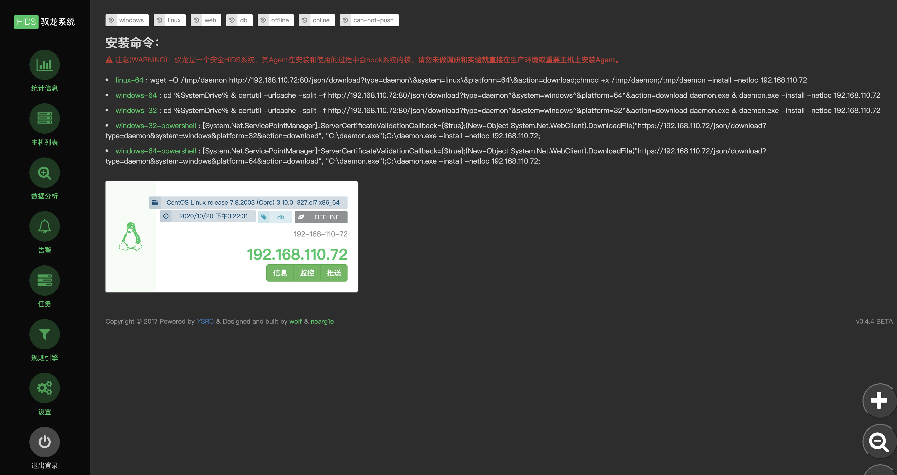
此模块为agent管理模块，方便用户监控安装agent的主机行为（进程、文件、网络等）并支持agent下载安装
3、数据分析
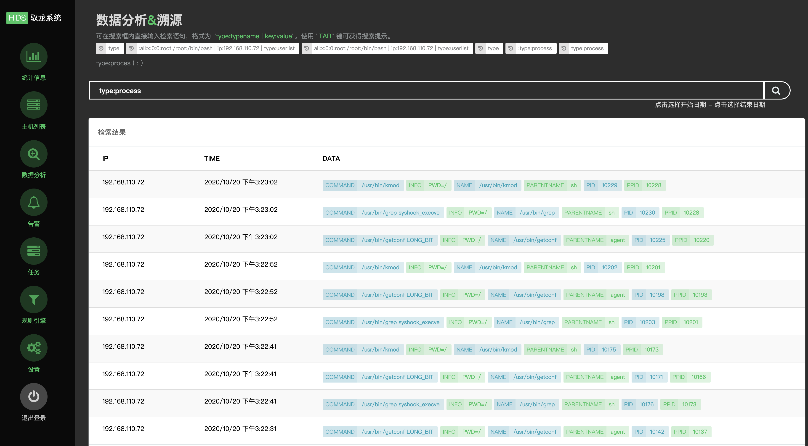
此模块为溯源模块，可以从es中快速查询关键词显示，支持简单的搜索语法
4、告警
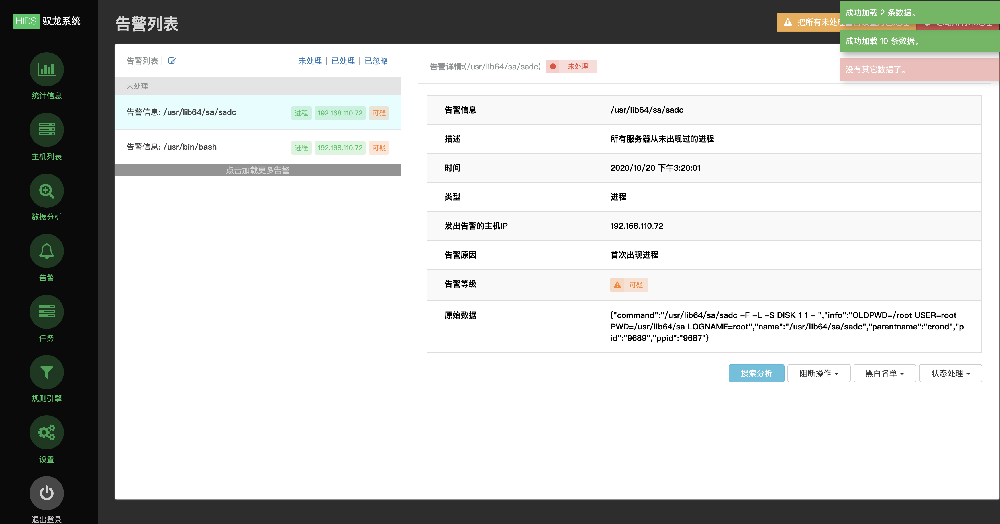
显示全量告警，支持自动溯源和处置响应（进程、文件、网络），允许手动变更事件状态（未处理、已处理、忽略）并支持加白/加黑处理
5、任务
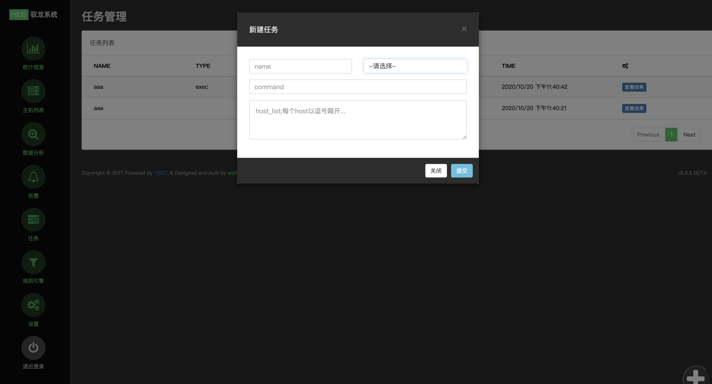
允许用户在server端自定义一些任务下发给agent，任务指令如下：
1 2 3 4 5 6 7 kill : 结束进程(传入进程名)uninstall : 卸载自身update : Agent 更新delete : 文件删除(传入文件路径)exec: 自定义命令 (发布的release 不支持这个功能，如需这个功能，请去掉注释，自行编译agent ) reload: 重启Agent quit: 结束自身
6、规则引擎
此模块自己实现了一套简单的规则引擎对事件进行过滤和匹配规则，支持server控制台编写、导出、修改（编辑）规则，支持已有规则的细粒度控制（开/关）
7、设置
此模块可通过修改配置影响agent及server处理
三、架构 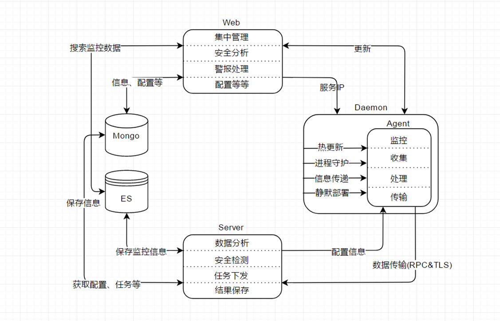
以上为yulong的整体架构图，具体说明如下：
Agent agent为主机端探针，主要负责行为监控、信息收集、数据处理、事件上传功能，具体说明如下：
1 2 3 4 5 6 7 信息收集：收集主机开启启动项、计划任务、监听端口、服务、登陆日志、用户列表等静态文件 行为监控：收集主机行为数据，包括进程行为、文件行为、网络行为，三种信息收集方式分别为 进程监控：lkm hook（execve）（agent监控本地udp65530接收进程信息） 文件监控：inotify 网络监控：libpcap 数据处理：对收集的信息在格式化前进行简单的过滤和筛选处理 事件上传：将处理后的数据组成特定格式以事件形式通过rpc服务上传给server ，由server 进行规则解析和处理
Daemon daemon为agent的守护进程，负责agent热更新、进程守护、静默部署、服务指令接收等功能，具体说明如下：
1 2 3 4 热更新：支持部署hids的主机自动从server 下载更新agent 进程守护：注册daemon为服务，agent线程退出后daemon负责重启 静默部署：后台静默安装 服务指令接收：开放65512 端口用于接收server 端下发的指令任务
Server server主要用于agent数据接收、数据分析、安全检测、任务下发及结果保存，具体说明如下：
1 2 3 4 5 数据接收：server 在33433 端口部署rpc服务来接收所有agent上传的监控事件并回传agent获取配置请求结果（getinfo、putinfo） 数据分析：自动化溯源功能，server 根据控制台规则去es索引数据并在web渲染显示 安全检测：利用自实现规则引擎对接收到的agent事件进行规则匹配，匹配结果入库（mongodb） 结果保存：安全检测结果入库（mongodb），全量行为事件（file、process、loginlog、connection ）入es 任务下发：web控制台上新建任务会由web后端响应并通过65512 端口将任务以特定数据格式下发给daemon并接收执行返回结果信息
Database yulong这块的database主要包含es、mongodb两个平台，es主要为溯源使用，mongodb则保存一些配置及具体任务、规则等静态信息，具体说明如下：
1 2 3 4 5 6 7 8 es： 1 、保存agent监控到的全量主机行为事件（file、process、loginlog、connection）2 、server的数据分析功能会从es中拉数据mongodb： 1 、web端的任务新建、规则修改等动作会由web后端响应并修改mongodb相关库表（增删改查）2 、web前端的动作生效后，server可以从mongodb中获取变更的配置、任务、规则等3 、agent通过rpc调用利用server读写mongo4 、server根据数据分析结果增删改查mongo
Web web主要负责集中管理、安全分析、警报处理、配置等项，功能基本可以在web前端看到，不再赘述；后端等后续填坑
四、实现 源码结构 1 2 3 4 5 6 7 8 9 10 11 12 13 14 15 16 17 18 19 20 21 22 23 24 25 26 27 28 29 30 31 32 ├─agent │ ├─client │ ├─common │ ├─collect │ └─monitor ├─bin │ ├─linux-64 │ ├─win-32 │ └─win-64 ├─daemon │ ├─common │ ├─install │ └─task ├─docs ├─driver ├─server │ ├─action │ ├─models │ └─safecheck ├─syscall_hook # 监控执行命令的Linux内核代码 │ └─test_bench └─web ├─conf ├─controllers ├─httpscert ├─models ├─routers ├─settings ├─static ├─upload_files ├─utils └─views
Agent main 从agent.go中的main开始看起：
1 2 3 4 5 6 7 8 9 10 11 12 13 14 15 16 17 18 19 20 func main( ) { if len( os.Args) <= 1 { fmt.Println( "Usage: agent[.exe] ServerIP [debug]" ) fmt.Println( "Example: agent 8.8.8.8 debug" ) return } if runtime.GOOS == "linux" { out , _ := common.CmdExec(fmt.Sprintf("lsmod|grep syshook_execve" )) if out == "" { common.CmdExec(fmt.Sprintf("insmod %s/syshook_execve.ko" , common.InstallPath)) } } var agent client.Agent agent.ServerNetLoc = os.Args[1] if len( os.Args) == 3 && os.Args[2] == "debug" { log.Println( "DEBUG MODE" ) agent.IsDebug = true } agent.Run( ) }
首先检测参数数量，要求参数至少有两个，逻辑上要求参数之一必须是server所在ip，但这边有个bug，没有校验os.Args[1]的格式，导致如果第一个参数为debug，agent将无法启动：
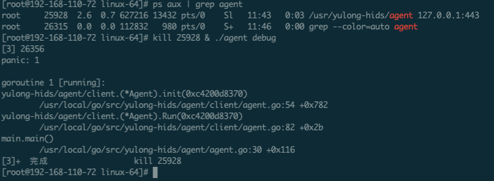
继续往下看，之后检测运行环境是否是linux，若是，调go的exec函数执行bash命令检测进程监控所用的lkm模块（syshook_execve）是否已经加载，若加载，继续后续流程，若未加载，则调insmod加载，加载的内核模块路径在daemon模块中的common.go中指定为/usr/yulong-hids，daemon会负责agent运行环境的依赖检测和内核模块的编译及放置在指定位置等，这个之后再详述；
检测是否开启debug模式，若是，则给全局结构体agent的IsDebug状态位置true，之后调用agent.Run()正式启动agent
client 现在控制流到了client模块
1 2 3 4 5 6 7 8 9 10 11 12 13 14 15 16 17 func (a *Agent) Run () { a .init () a .configRefresh () a .monitor () a .getInfo () }
run函数功能划分在注释中已经说的很清楚了，分别进入每一个模块：
init
1 2 3 4 5 6 7 8 9 10 11 12 13 14 15 16 17 18 19 20 21 22 23 24 25 26 func (a *Agent) init() { a.ServerList, err = a.getServerList() if err != nil { a.log ("GetServerList error:" , err ) panic(1 ) } a.ctx = context.WithValue(context.Background(), share.ReqMetaDataKey, make(map[string ]string )) a.log ("Available server node:" , a.ServerList) if len (a.ServerList) == 0 { time .Sleep(time .Second * 30 ) a.log ("No server node available" ) panic(1 ) } a.newClient() if common.LocalIP == "" { a.log ("Can not get local address" ) panic(1 ) } a.Mutex = new (sync.Mutex) err := a.Client.Call (a.ctx, "GetInfo" , &common.ServerInfo, &common.Config) if err != nil { a.log ("RPC Client Call Error:" , err .Error ()) panic(1 ) } a.log ("Common Client Config:" , common.Config) }
首先寻找server地址，相关逻辑在getServerList函数中，如下：
1 2 3 4 5 6 7 8 9 10 11 12 13 14 15 16 17 18 19 20 21 22 23 24 25 26 func (a Agent) getServerList () ([]string , error) var serlist []string var url string if TESTMODE { url = "http://" + a.ServerNetLoc + SERVER_API } else { url = "https://" + a.ServerNetLoc + SERVER_API } a.log("Web API:" , url) request, _ := http.NewRequest("GET" , url, nil ) request.Close = true resp, err := httpClient.Do(request) if err != nil { return nil , err } defer resp.Body.Close() result, err := ioutil.ReadAll(resp.Body) if err != nil { return nil , err } err = json.Unmarshal([]byte (result), &serlist) if err != nil { return nil , err } return serlist, nil }
a.ServerNetLoc其实就是agent启动参数中用户指定的serverip，SERVER_API在client中config.go中定义为/json/serverlist，二者拼接之后向server发送请求，返回结果为serverip:port的列表格式，此处暂时不考虑server集群的情况
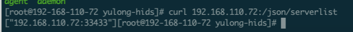
对getServerList的结果进行异常处理之后进入newclient模块
1 2 3 4 5 6 7 8 9 10 11 12 13 14 15 16 17 18 19 20 21 func (a *Agent) newClient() { var servers []*client.KVPair for _, server := range a.ServerList { common.ServerIPList = append(common .ServerIPList, strings.Split(server , ":" )[0 ]) s := client.KVPair{Key: server} servers = append(servers , &s ) if common.LocalIP == "" { a.setLocalIP(server ) common.ServerInfo = collect.GetComInfo() a.log("Host Information:" , common.ServerInfo) } } conf := &tls .Config{ InsecureSkipVerify: true, } option := client.DefaultOption option.TLSConfig = conf serverd := client.NewMultipleServersDiscovery(servers ) a.Client = client.NewXClient("Watcher" , FAILMODE, client.RandomSelect, serverd, option) a.Client.Auth(AUTH_TOKEN ) }
newclient模块主要负责获取部署agent所在主机的相关信息以及部分配置信息，获取项在agent/common/common.go中
1 2 3 4 5 6 7 8 9 10 11 12 13 14 15 16 17 18 19 20 21 22 23 24 25 26 27 28 29 30 31 32 33 type ClientConfig struct { Cycle int UDP bool LAN bool Mode string Filter struct { File []string IP []string Process []string } MonitorPath []string Lasttime string } type ComputerInfo struct { IP string System string Hostname string Type string Path []string } var ( Config ClientConfig LocalIP string ServerInfo ComputerInfo ServerIPList []string )
获取主机相关信息后调用rpc_getinfo去server初步拉配置，具体配置项在server模块中有说明：
1 2 3 4 5 6 7 8 9 10 11 if common.LocalIP == "" { a .log("Can not get local address" ) panic(1 ) } a .Mutex = new(sync.Mutex)err := a .Client .Call(a .ctx , "GetInfo" , &common.ServerInfo , &common.Config) if err != nil { a .log("RPC Client Call Error:" , err.Error()) panic(1 ) } a .log("Common Client Config:" , common.Config
configRefresh
起一个线程，每60s调一次rpc_getinfo去数据库拉一次配置，保证控制台配置变更后尽快生效：
1 2 3 4 5 6 7 8 9 10 11 12 13 func (a *Agent ) configRefresh () { ticker := time.NewTicker (time.Second * time.Duration(CONFIGR_REF_INTERVAL)) go func () { for _ = range ticker.C { ch := make (chan bool) go func () { err = a.Client.Call (a.ctx, "GetInfo" , &common.ServerInfo, &common.Config) if err != nil { a.log ("RPC Client Call:" , err.Error()) return } ch <- true }()
monitor
monitor函数主要用于agent所在主机的行为监控，可以看到monitor调用agent/monitor/中的函数起了三个线程，看函数名可知分别为网络嗅探、进程监控、文件监控，跟进monitor模块分析；行为监控的结果调rpc_putinfo上传server处理：
1 2 3 4 5 6 7 8 9 10 11 12 13 14 15 16 17 18 19 20 21 func (a *Agent ) monitor () { resultChan := make (chan map[string]string, 16 ) go monitor.StartNetSniff (resultChan) go monitor.StartProcessMonitor (resultChan) go monitor.StartFileMonitor (resultChan) go func (result chan map[string]string) { var resultdata []map[string]string var data map[string]string for { data = <-result data["time" ] = fmt.Sprintf ("%d" , time.Now().Unix ()) a.log ("Monitor data: " , data) source := data["source" ] delete (data, "source" ) a.Mutex.Lock () a.PutData = dataInfo{common.LocalIP, source, runtime.GOOS, append (resultdata, data)} a .put () a .Mutex .Unlock () } }(resultChan ) }
1 2 3 4 5 6 func (a Agent) put() { _, err := a .Client .Go(a .ctx , "PutInfo" , &a .PutData , &a .Reply , nil) if err != nil { a .log("PutInfo error:" , err.Error()) } }
monitor StartNetSniff
先贴下代码：
1 2 3 4 5 6 7 8 9 10 11 12 13 14 15 16 17 18 19 20 21 22 23 24 25 26 27 28 29 30 31 32 33 34 35 36 37 38 39 40 41 42 43 44 45 46 47 48 49 50 51 52 53 54 55 56 57 58 59 60 61 62 63 64 65 66 67 68 69 70 71 72 73 74 75 76 77 78 79 80 81 82 83 84 85 86 87 88 89 90 91 func StartNetSniff (resultChan chan map [string ]string ) var pkt *pcap.Packet var resultdata map [string ]string h, err := getPcapHandle(common.LocalIP) if err != nil { return } for { pkt = h.Next() if pkt == nil { continue } pkt.Decode() var port int var ip string var localPort int resultdata = map [string ]string { "source" : "" , "dir" : "" , "protocol" : "" , "remote" : "" , "local" : "" , "pid" : "" , "name" : "" , } if pkt.IP != nil && (common.LocalIP == pkt.IP.SrcAddr() || common.LocalIP == pkt.IP.DestAddr()) && !common.InArray(common.ServerIPList, pkt.IP.SrcAddr(), false ) && !common.InArray(common.ServerIPList, pkt.IP.DestAddr(), false ) { resultdata["source" ] = "connection" if common.LocalIP == pkt.IP.SrcAddr() { ip = pkt.IP.DestAddr() resultdata["dir" ] = "out" } else { ip = pkt.IP.SrcAddr() resultdata["dir" ] = "in" } if common.ServerInfo.Type == "web" && resultdata["dir" ] == "in" { continue } if !common.Config.LAN && isLan(ip) { continue } if common.InArray(common.Config.Filter.IP, ip, false ) { continue } if pkt.IP.Protocol == UDP { if common.Config.UDP == false { continue } resultdata["protocol" ] = "udp" if resultdata["dir" ] == "out" { port = int (pkt.UDP.DestPort) localPort = int (pkt.UDP.SrcPort) } else { port = int (pkt.UDP.SrcPort) localPort = int (pkt.UDP.DestPort) } if isFilterPort(port) || isFilterPort(localPort) { continue } resultdata["remote" ] = fmt.Sprintf("%s:%d" , ip, port) resultdata["local" ] = fmt.Sprintf("%s:%d" , common.LocalIP, localPort) } else if pkt.IP.Protocol == TCP && strings.Contains(pkt.String(), "[syn]" ) { resultdata["protocol" ] = "tcp" if resultdata["dir" ] == "out" { port = int (pkt.TCP.DestPort) localPort = int (pkt.TCP.SrcPort) } else { port = int (pkt.TCP.SrcPort) localPort = int (pkt.TCP.DestPort) } if isFilterPort(port) || isFilterPort(localPort) { continue } resultdata["remote" ] = fmt.Sprintf("%s:%d" , ip, port) conName := C.GoString(C.filter(C.CString(ip), C.int (port))) if conName != "" { resultdata["pid" ] = strings.SplitN(conName, "/" , 2 )[0 ] resultdata["name" ] = strings.SplitN(conName, "/" , 2 )[1 ] } resultdata["local" ] = fmt.Sprintf("%s:%d" , common.LocalIP, localPort) } else { continue } resultChan <- resultdata } } }
使用gopcap库调libpcap api实时捕获流量包，保存在pkt数据报结构里，并调用pkt.Decode进行raw data的字段解析；
1 2 3 4 5 6 7 8 9 10 11 12 var pkt *pcap.Packet var resultdata map [string ]string h, err := getPcapHandle(common.LocalIP) if err != nil { return } for { pkt = h.Next() if pkt == nil { continue } pkt.Decode()
定义好结果数据格式：
1 2 3 4 5 6 7 8 9 resultdata = map [string ]string { "source" : "" , "dir" : "" , "protocol" : "" , "remote" : "" , "local" : "" , "pid" : "" , "name" : "" , }
首先过滤掉srcAddr和DstAddr都是自己的数据包，确保捕获的都是外联的流量事件，其次过滤掉srcAddr和DstAddr为serverip的流量，保证捕获的流量是除与Serverip通信之外的流量
1 2 3 if pkt. IP != nil && (common . LocalIP == pkt. IP . SrcAddr() || common . LocalIP == pkt. IP . DestAddr()) && !common . InArray(common . ServerIPList, pkt. IP . SrcAddr(), false) && !common . InArray(common . ServerIPList, pkt. IP . DestAddr(), false) {
resultdata中的source标明事件类型：connection，通过将流量srcAddr与agentLocalIp比较来判断流量流向；判断主机是否是web类型服务器，如果是，则一切流入的流量都过滤
1 2 3 4 5 6 7 8 9 10 11 resultdata["source" ] = "connection" if common.LocalIP == pkt.IP.SrcAddr() { ip = pkt.IP.DestAddr() resultdata["dir" ] = "out" } else { ip = pkt.IP.SrcAddr() resultdata["dir" ] = "in" } if common.ServerInfo.Type == "web" && resultdata["dir" ] == "in" { continue }
判断是否打开记录内网流量事件的配置同时判断流量ip是否是内网，若是，且内网记录配置未开启，则过滤；判断流量ip是否在ip白名单中，若是，则过滤
1 2 3 4 5 6 7 if !common .Config.LAN && isLan(ip) { continue } if common .InArray(common .Config.Filter.IP, ip, false ) { continue }
判断ip数据报协议类型是否为udp，若是，继续判断控制台记录udp选项是否开启，若未开启，则过滤；若开启，则继续判断流向，并根据流向将解析后的数据包中的源/目的地址分别赋值给port及locaport；之后判断流量所在端口是否在硬编码的白名单端口中，若是，则过滤；最终，将ip、port与localip、localport分别拼接保存在remote、local两个变量中
1 2 3 4 5 6 7 8 9 10 11 12 13 14 15 16 17 18 if pkt.IP.Protocol == UDP { if common.Config.UDP == false { continue } resultdata["protocol "] = "udp" if resultdata["dir "] == "out" { port = int (pkt.UDP.DestPort) localPort = int (pkt.UDP.SrcPort) } else { port = int (pkt.UDP.SrcPort) localPort = int (pkt.UDP.DestPort) } if isFilterPort(port ) || isFilterPort(localPort ) { continue } resultdata["remote "] = fmt.Sprintf("%s:%d" , ip , port ) resultdata["local "] = fmt.Sprintf("%s:%d" , common .LocalIP, localPort ) }
1 2 3 4 5 6 7 8 func isFilterPort(port int) bool { for _, v := range filter.Port { if v == port { return true } } return false }
1 2 3 4 5 func init () filter.Port = []int {137 , 139 , 445 } filter.File = []string {`c:\windows\temp` } }
tcp和udp逻辑类似，不同之处在于tcp流量记录是默认开启的（没有配置），且只判断握手包中的syn包，其它基本一致
1 2 3 4 5 6 7 8 9 10 11 12 13 else if pkt.IP.Protocol == TCP && strings.Contains(pkt .String() , "[syn]" ) { resultdata["protocol "] = "tcp" if resultdata["dir "] == "out" { port = int (pkt.TCP.DestPort) localPort = int (pkt.TCP.SrcPort) } else { port = int (pkt.TCP.SrcPort) localPort = int (pkt.TCP.DestPort) } if isFilterPort(port ) || isFilterPort(localPort ) { continue } resultdata["remote "] = fmt.Sprintf("%s:%d" , ip , port )
将流量关联到进程；go调c代码中的filter函数，将remote ip和remote port作为参数，返回包含pid和cmdline的字符串，调用层对其进行分割，保存到map中
1 2 3 4 5 6 conName := C .GoString (C .filter(C .CString (ip), C .int(port))) if conName != "" { resultdata["pid" ] = strings.SplitN (conName, "/" , 2 )[0 ] resultdata["name" ] = strings.SplitN (conName, "/" , 2 )[1 ] } resultdata["local" ] = fmt.Sprintf ("%s:%d" , common.LocalIP , localPort)
具体关联方式需要参考项目中的c代码，先贴下：
1 2 3 4 5 6 7 8 9 10 11 12 13 14 15 16 17 18 19 20 21 22 23 24 25 26 27 28 29 30 31 32 33 34 35 36 37 38 39 40 41 42 43 44 45 46 47 48 49 50 51 52 53 54 55 56 57 58 59 60 61 62 63 64 65 66 67 68 69 70 71 72 73 74 75 76 77 78 79 80 81 82 83 84 85 86 87 88 89 90 91 92 93 94 95 96 97 98 99 100 101 102 103 104 105 106 107 108 109 110 111 112 113 114 115 116 117 118 119 120 121 122 123 124 125 126 127 128 129 130 131 132 133 134 135 136 137 138 139 140 141 142 143 144 145 146 147 148 149 150 151 152 153 154 155 156 157 158 159 160 161 162 163 164 165 166 167 168 169 170 171 172 173 174 175 176 177 178 179 180 181 182 183 184 185 186 187 188 189 190 /* typedef union iaddr iaddr; union iaddr { unsigned u; unsigned char b[4 ]; }; static void addr2str(int af, const void *addr, unsigned port, char *buf) { if (inet_ntop(af, addr, buf, ADDR_LEN) == NULL) { *buf = '\0' ; return ; } } static char finbuf[PROGNAME_WIDTH]; static void extract_type_1_socket_inode(const char lname[], long * inode_p) { if (lname[strlen(lname) - 1 ] != ']' ) *inode_p = -1 ; else { char inode_str[strlen(lname + 1 )]; const int inode_str_len = strlen(lname) - PRG_SOCKET_PFXl - 1 ; char *serr; strncpy(inode_str, lname + PRG_SOCKET_PFXl, inode_str_len); inode_str[inode_str_len] = '\0' ; *inode_p = strtol(inode_str, &serr, 0 ); if (!serr || *serr || *inode_p < 0 || *inode_p >= 2147483647 ) *inode_p = -1 ; } } static char * pget(unsigned uid,long inode) { DIR *d = opendir ("/proc" ); if (NULL == d) return "" ; long inode_p; char statline[1024 ]; char cmdline[1024 ]; struct dirent *de; struct stat stats; struct passwd *pw; int fd, i = 0 ; int procfdlen, fd_last, cmdllen, lnamelen; char line[LINE_MAX], eacces = 0 ; char lname[30 ], cmdlbuf[512 ]; DIR *dirproc = NULL, *dirfd = NULL; struct dirent *direproc, *direfd; cmdlbuf[sizeof(cmdlbuf)-1 ] = '\0' ; const char *cs, *cmdlp; if (!(dirproc = opendir (PATH_PROC))) { printf ("error" ); return "" ; } while (direproc = readdir (dirproc)) { for (cs = direproc->d_name; *cs; cs++) if (!isdigit(*cs)) break ; if (*cs) continue ; procfdlen = snprintf(line, sizeof(line), PATH_PROC_X_FD, direproc->d_name); if (procfdlen <= 0 || procfdlen >= sizeof(line)-5 ) continue ; errno = 0 ; dirfd = opendir (line); if (!dirfd) { if (errno ==1 ) eacces = 1 ; continue ; } line[procfdlen] = '/' ; cmdlp = NULL; while ((direfd = readdir (dirfd))) { if (procfdlen + 1 + strlen(direfd->d_name) + 1 >sizeof(line)) continue ; memcpy(line + procfdlen - PATH_FD_SUFFl, PATH_FD_SUFF "/" , PATH_FD_SUFFl + 1 ); strcpy(line + procfdlen + 1 , direfd->d_name); lnamelen = readlink (line, lname, sizeof(lname)-1 ); lname[lnamelen] = '\0' ; extract_type_1_socket_inode(lname, &inode_p); if (inode_p == inode) { if (!cmdlp) { if (procfdlen - PATH_FD_SUFFl + PATH_CMDLINEl >= sizeof(line)-5 ) continue ; strcpy(line + procfdlen - PATH_FD_SUFFl, PATH_CMDLINE); fd = open (line, O_RDONLY); if (fd < 0 ) continue ; cmdllen = read (fd, cmdlbuf, sizeof(cmdlbuf)-1 ); if (close (fd)) continue ; if (cmdllen == -1 ) continue ; if (cmdllen < sizeof(cmdlbuf)-1 ) cmdlbuf[cmdllen] = '\0' ; if ((cmdlp = strrchr(cmdlbuf, '/' ))) cmdlp++; else cmdlp = cmdlbuf; } snprintf(finbuf, sizeof(finbuf), "%s/%s" , direproc->d_name, cmdlp); return finbuf; } } } return "" ; } char *s ; static char * filter(char *host, int port) { char *filename = "/proc/net/tcp" ; char *label = "tcp" ; memset(finbuf,0 ,PROGNAME_WIDTH); FILE *fp = fopen(filename, "r" ); if (fp == NULL) return ; long inode; char buf[BUFSIZ]; fgets(buf, BUFSIZ, fp); while (fgets(buf, BUFSIZ, fp)){ char lip[ADDR_LEN]; char rip[ADDR_LEN]; char more[512 ]; iaddr laddr, raddr; unsigned lport, rport, state , txq, rxq, num, tr , tm_when, retrnsmt, uid; int timeout; int n = sscanf(buf, " %d: %x:%x %x:%x %x %x:%x %x:%x %x %d %d %ld %512s" , &num, &laddr.u, &lport, &raddr.u, &rport, &state , &txq, &rxq, &tr , &tm_when, &retrnsmt, &uid, &timeout, &inode, more); if (n == 15 ) { addr2str(AF_INET, &laddr, lport, lip); addr2str(AF_INET, &raddr, rport, rip); if ( (int )rport == port) { pget(uid, inode); fclose(fp); return finbuf; } } } fclose(fp); return "" ; } */
代码比较简单，大致说下，利用传递进filter函数的remote ip、port的参数去/proc/net/tcp下筛出连接对应的inode1，在pget函数利用readdir遍历/proc下全量pid子目录，获取/proc/pid/fd/下对应文件描述符指向的inode2，拿此inode2与inode1进行对比，若相等，取出对应pid下的cmdline并和pid拼接，最终返回拼接后的字符串给调用方的conName，调用层再进行进一步拆解赋值组合成指定格式的网络事件，网络行为监控这块基本如上所示
StartProcessMonitor
这边的进程监控稍微有一点复杂，放到另外一章去记录
StartFileMonitor
文件监控用的fsnotify库，封装了inotify api，进程读写动作会触发回调生成文件事件；拿到文件操作事件后模块里还有一个自定义的获取hash操作并归并到文件事件：
1 2 3 4 5 6 7 8 9 10 11 12 13 14 15 16 17 18 19 20 21 22 23 24 25 26 27 28 29 30 31 32 33 34 35 36 37 38 39 40 41 42 43 44 45 46 47 48 49 50 51 52 53 54 55 56 57 58 59 60 61 62 63 func StartFileMonitor (resultChan chan map [string ]string ) log.Println("StartFileMonitor" ) var pathList []string watcher, err := fsnotify.NewWatcher() if err != nil { return } defer watcher.Close() for _, path := range common.Config.MonitorPath { if path == "%web%" { iterationWatcher(common.ServerInfo.Path, watcher, pathList) continue } if strings.HasPrefix(path, "/" ) { pathList = append (pathList, path) if strings.HasSuffix(path, "*" ) { iterationWatcher([]string {strings.Replace(path, "*" , "" , 1 )}, watcher, pathList) } else { watcher.Add(path) } } } var resultdata map [string ]string for { select { case event := <-watcher.Events: resultdata = make (map [string ]string ) if common.InArray(filter.File, strings.ToLower(event.Name), false ) || common.InArray(pathList, strings.ToLower(event.Name), false ) || common.InArray(common.Config.Filter.File, strings.ToLower(event.Name), true ) { continue } if len (event.Name) == 0 { continue } resultdata["source" ] = "file" resultdata["action" ] = event.Op.String() resultdata["path" ] = event.Name resultdata["hash" ] = "" resultdata["user" ] = "" f, err := os.Stat(event.Name) if err == nil && !f.IsDir() { if f.Size() <= fileSize { if hash, err := getFileMD5(event.Name); err == nil { resultdata["hash" ] = hash if common.InArray(common.Config.Filter.File, strings.ToLower(hash), false ) { continue } } } if user, err := getFileUser(event.Name); err == nil { resultdata["user" ] = user } } if isFileWhite(resultdata) { continue } resultChan <- resultdata case err := <-watcher.Errors: log.Println("error:" , err) } } }
collect getInfo
collect主要是信息收集相关的模块，与进程、文件、网络这些行为监控不同的是，为了性能和其它一些情况考虑，这块一般不是实时的；yulong这块是在控制台配置了收集型信息的回传间隔放到数据库里并提供rpc api，agent调configRefresh去拉配置并根据配置好的间隔时间（单位：min）进行sleep，确保回传不会太频繁；getinfo调用getallinfo，在其内部调用collect的具体收集子模块；返回信息存放在alldata中，数据处理后rpc调用远端的putinfo方法上传事件：
1 2 3 4 5 6 7 8 9 10 11 12 13 14 15 16 17 18 19 20 21 22 23 24 25 26 27 28 29 30 31 32 33 34 35 36 37 func (a *Agent) getInfo() { historyCache := make(map[string][]map[string]string) for { if len(common.Config .MonitorPath ) == 0 { time.Sleep (time.Second ) a.log ("Failed to get the configuration information") continue } allData := collect.GetAllInfo () for k, v := range allData { if len(v) == 0 || a.mapComparison (v, historyCache[k]) { a.log ("GetInfo Data:", k, "No change") continue } else { a.Mutex .Lock () a.PutData = dataInfo{common.LocalIP , k, runtime.GOOS , v} a.put () a.Mutex .Unlock () if k != "service" { a.log ("Data details:", k, a.PutData ) } historyCache[k] = v } } if common.Config .Cycle == 0 { common.Config .Cycle = 1 } time.Sleep (time.Second * time.Duration (common.Config .Cycle ) * 60) } } func (a Agent) put() { _, err := a.Client .Go (a.ctx , "PutInfo", &a.PutData , &a.Reply , nil) if err != nil { a.log ("PutInfo error:", err.Error ()) } }
1 2 3 4 5 6 7 8 9 10 func GetAllInfo () map[string][]map[string]string { allInfo["listening" ] = GetListening () allInfo["service" ] = GetServiceInfo () allInfo["userlist" ] = GetUser () allInfo["startup" ] = GetStartup () allInfo["crontab" ] = GetCrontab () allInfo["loginlog" ] = GetLoginLog () allInfo["processlist" ] = GetProcessList () return allInfo }
各子模块功能如下：
Computerinfo_linux
获取agent部署主机的内核版本、架构等计算机信息存放到info结构体内；并在最后调用discern函数获取web服务路径，这个在init.go函数中有说明：
1 2 3 4 5 6 7 8 9 10 11 12 13 14 15 16 func GetComInfo() (info common .ComputerInfo) { info .IP = common .LocalIP info .Hostname, _ = os.Hostname() out := common .Cmdexec("uname -r" ) dat, err := ioutil.ReadFile("/etc/redhat-release" ) if err != nil { dat, _ = ioutil.ReadFile("/etc/issue" ) issue := strings.SplitN(string(dat), "\n" , 2 )[0 ] out2 := common .Cmdexec("uname -m" ) info .System = issue + " " + out + out2 } else { info .System = string(dat) + " " + out } discern(&info ) return info }
crontab_linux
获取agent所在主机的系统及用户计划任务，并分字段解析
1 2 3 4 5 6 7 8 9 10 11 12 13 14 15 16 17 18 19 20 21 22 23 24 25 26 27 28 29 30 31 32 33 34 35 36 37 38 39 40 41 42 func GetCrontab () (resultData []map [string ]string ) dat, err := ioutil.ReadFile("/etc/crontab" ) if err != nil { return resultData } cronList := strings.Split(string (dat), "\n" ) for _, info := range cronList { if strings.HasPrefix(info, "#" ) || strings.Count(info, " " ) < 6 { continue } s := strings.SplitN(info, " " , 7 ) rule := strings.Split(info, " " +s[5 ])[0 ] m := map [string ]string {"command" : s[6 ], "user" : s[5 ], "rule" : rule} resultData = append (resultData, m) } dir, err := ioutil.ReadDir("/var/spool/cron/" ) if err != nil { return resultData } for _, f := range dir { if f.IsDir() { continue } dat, err = ioutil.ReadFile("/var/spool/cron/" + f.Name()) if err != nil { continue } cronList = strings.Split(string (dat), "\n" ) for _, info := range cronList { if strings.HasPrefix(info, "#" ) || strings.Count(info, " " ) < 5 { continue } s := strings.SplitN(info, " " , 6 ) rule := strings.Split(info, " " +s[5 ])[0 ] m := map [string ]string {"command" : s[5 ], "user" : f.Name(), "rule" : rule} resultData = append (resultData, m) } } return resultData
Listen_linux
调ss -nltp获取当前主机监听的所有tcp连接，过滤掉127.0.0.1，检测local address：port字段中是否存在::或*特殊字符，若有，换成0.0.0.0，其它过滤等等，最终将address、pid、pname放到map中
1 2 3 4 5 6 7 8 9 10 11 12 13 14 15 16 17 18 19 20 21 22 23 24 25 26 27 28 29 30 31 32 33 34 35 36 37 38 39 40 41 42 43 44 45 func GetListening () (resultData []map [string ]string ) listeningStr := common.Cmdexec("ss -nltp" ) listeningList := strings.Split(listeningStr, "\n" ) if len (listeningList) < 2 { return } for _, info := range listeningList[1 : len (listeningList)-1 ] { if strings.Contains(info, "127.0.0.1" ) { continue } m := make (map [string ]string ) reg := regexp.MustCompile("\\s+" ) info = reg.ReplaceAllString(strings.TrimSpace(info), " " ) s := strings.Split(info, " " ) if len (s) < 6 { continue } m["proto" ] = "TCP" if strings.Contains(s[3 ],"::" ){ m["address" ] = strings.Replace(s[3 ], "::" , "0.0.0.0" , 1 ) }else { m["address" ] = strings.Replace(s[3 ], "*" , "0.0.0.0" , 1 ) } b := false for _,v:= range resultData{ if v["address" ] == m["address" ]{ b = true break } } if b{ continue } reg = regexp.MustCompile(`users:\(\("(.*?)",(.*?),.*?\)` ) r := reg.FindSubmatch([]byte (s[5 ])) if strings.Contains(string (r[2 ]), "=" ) { m["pid" ] = strings.SplitN(string (r[2 ]), "=" , 2 )[1 ] } else { m["pid" ] = string (r[2 ]) } m["name" ] = string (r[1 ]) resultData = append (resultData, m) } return resultData }
login_log
解析/var/log/wtmp或运行lastb命令获取当前主机所有用户登陆信息：
1 2 3 4 5 6 7 8 9 10 11 12 13 14 15 16 17 18 19 20 21 22 23 24 25 26 27 28 29 30 31 32 33 34 35 36 37 38 39 40 41 42 43 44 45 46 47 48 49 50 51 52 53 54 55 56 57 58 59 60 61 62 63 64 65 66 67 68 69 70 71 72 73 74 75 76 77 78 79 80 81 82 83 84 85 86 type utmp struct { UtType uint32 UtPid uint32 UtLine [32 ]byte UtID [4 ]byte UtUser [32 ]byte UtHost [256 ]byte UtExit struct { ETermination uint16 EExit uint16 } UtSession uint32 UtTv struct { TvSec uint32 TvUsec uint32 } UtAddrV6 [4 ]uint32 Unused [20 ]byte } func getLast (t string ) (result []map [string ]string ) var timestamp int64 if t == "all" { timestamp = 615147123 } else { ti, _ := time.Parse("2006-01-02T15:04:05Z07:00" , t) timestamp = ti.Unix() } wtmpFile, err := os.Open("/var/log/wtmp" ) if err != nil { log.Println(err.Error()) return } defer wtmpFile.Close() for { wtmp := new (utmp) err = binary.Read(wtmpFile, binary.LittleEndian, wtmp) if err != nil { break } if wtmp.UtType == 7 && int64 (wtmp.UtTv.TvSec) > timestamp { m := make (map [string ]string ) m["status" ] = "true" m["remote" ] = string (bytes.TrimRight(wtmp.UtHost[:], "\x00" )) if m["remote" ] == "" { continue } m["username" ] = string (bytes.TrimRight(wtmp.UtUser[:], "\x00" )) m["time" ] = time.Unix(int64 (wtmp.UtTv.TvSec), 0 ).Format("2006-01-02T15:04:05Z07:00" ) result = append (result, m) } } return result } func getLastb (t string ) (result []map [string ]string ) var cmd string ti, _ := time.Parse("2006-01-02T15:04:05Z07:00" , t) if t == "all" { cmd = "lastb --time-format iso" } else { cmd = fmt.Sprintf("lastb -s %s --time-format iso" , ti.Format("20060102150405" )) } out := common.Cmdexec(cmd) logList := strings.Split(out, "\n" ) for _, v := range logList[0 : len (logList)-3 ] { m := make (map [string ]string ) reg := regexp.MustCompile("\\s+" ) v = reg.ReplaceAllString(strings.TrimSpace(v), " " ) s := strings.Split(v, " " ) if len (s) < 4 { continue } m["status" ] = "false" m["username" ] = s[0 ] m["remote" ] = s[2 ] t, _ := time.Parse("2006-01-02T15:04:05Z0700" , s[3 ]) m["time" ] = t.Format("2006-01-02T15:04:05Z07:00" ) result = append (result, m) } return } func GetLoginLog () (resultData []map [string ]string ) resultData = getLast(common.Config.Lasttime) resultData = append (resultData, getLastb(common.Config.Lasttime)...) return }
process_linux
getprocesslist函数解析当前主机/proc目录获取当前运行的所有进程信息缓存全局变量中；getcmdline函数根据pid获取指定进程cmdline；getstatus函数解析/proc/pid/status中的信息；dirsUnder函数调用readdir返回/proc/子目录方便getprocesslist进行遍历：
1 2 3 4 5 6 7 8 9 10 11 12 13 14 15 16 17 18 19 20 21 22 23 24 25 26 27 28 29 30 31 32 33 34 35 36 37 38 39 40 41 42 43 44 45 46 47 48 49 50 51 52 53 54 55 56 57 58 59 60 61 62 63 64 65 66 67 68 69 70 71 72 73 74 75 76 77 78 79 func GetProcessList () (resultData []map [string ]string ) var dirs []string var err error dirs, err = dirsUnder("/proc" ) if err != nil || len (dirs) == 0 { return } for _, v := range dirs { pid, err := strconv.Atoi(v) if err != nil { continue } statusInfo := getStatus(pid) command := getcmdline(pid) m := make (map [string ]string ) m["pid" ] = v m["ppid" ] = statusInfo["PPid" ] m["name" ] = statusInfo["Name" ] m["command" ] = command resultData = append (resultData, m) } return } func getcmdline (pid int ) string cmdlineFile := fmt.Sprintf("/proc/%d/cmdline" , pid) cmdlineBytes, e := ioutil.ReadFile(cmdlineFile) if e != nil { return "" } cmdlineBytesLen := len (cmdlineBytes) if cmdlineBytesLen == 0 { return "" } for i, v := range cmdlineBytes { if v == 0 { cmdlineBytes[i] = 0x20 } } return strings.TrimSpace(string (cmdlineBytes)) } func getStatus (pid int ) (status map [string ]string ) status = make (map [string ]string ) statusFile := fmt.Sprintf("/proc/%d/status" , pid) var content []byte var err error content, err = ioutil.ReadFile(statusFile) if err != nil { return } for _, line := range strings.Split(string (content), "\n" ) { if strings.Contains(line, ":" ) { kv := strings.SplitN(line, ":" , 2 ) status[kv[0 ]] = strings.TrimSpace(kv[1 ]) } } return } func dirsUnder (dirPath string ) ([]string , error) fs, err := ioutil.ReadDir(dirPath) if err != nil { return []string {}, err } sz := len (fs) if sz == 0 { return []string {}, nil } ret := make ([]string , 0 , sz) for i := 0 ; i < sz; i++ { if fs[i].IsDir() { name := fs[i].Name() if name != "." && name != ".." { ret = append (ret, name) } } } return ret, nil }
user_linux
解析/etc/passwd中所有用户，过滤掉默认bash为nologin的用户，即无权限登陆的用户，最终返回用户名和描述组成的map：
1 2 3 4 5 6 7 8 9 10 11 12 13 14 15 16 17 18 19 20 func GetUser () (resultData []map [string ]string ) dat, err := ioutil.ReadFile("/etc/passwd" ) if err != nil { return resultData } userList := strings.Split(string (dat), "\n" ) if len (userList) < 2 { return } for _, info := range userList[0 : len (userList)-2 ] { if strings.Contains(info, "/nologin" ) { continue } s := strings.SplitN(info, ":" , 2 ) m := map [string ]string {"name" : s[0 ], "description" : s[1 ]} resultData = append (resultData, m) } return resultData }
web_path
检测参数是否与apache、httpd、nginx字符串相似（正则匹配），若相似，说明主机上可能存在此服务，此时就可以直接调用命令获取当前主机的所有web路径，最终返回当前主机所有web服务路径列表：
1 2 3 4 5 6 7 8 9 10 11 12 13 14 15 16 17 18 19 20 21 22 23 24 25 26 27 28 29 30 31 32 33 34 35 36 37 38 39 40 41 42 43 44 45 46 47 48 49 50 51 52 53 54 func getWebPath (webCommand string ) ([]string , error) var pathList []string if ok, _ := regexp.MatchString(`httpd|apache` , webCommand); ok { out := common.Cmdexec("apachectl -V" ) if !strings.Contains(string (out), "SERVER_CONFIG_FILE" ) { return pathList, errors.New("Get ConfigFilePath Error!" ) } reg2 := regexp.MustCompile(`HTTPD_ROOT="(.*?)"` ) reg := regexp.MustCompile(`SERVER_CONFIG_FILE="(.*?)"` ) configFilePath := reg2.FindStringSubmatch(string (out))[1 ] + "/" + reg.FindStringSubmatch(string (out))[1 ] if configFilePath != "/" { dat, err := ioutil.ReadFile(configFilePath) if err != nil { return pathList, err } reg = regexp.MustCompile(`<Directory "(.*?)">` ) pathM := reg.FindAllSubmatch([]byte (dat), -1 ) for _, info := range pathM { pathList = append (pathList, string (info[1 ])) } } } else if strings.Contains(webCommand, "nginx" ) { out := common.Cmdexec("nginx -V" ) regex, _ := regexp.Compile(`\-\-conf\-path\=(.*?)[ |$]` ) result := regex.FindStringSubmatch(out) if len (result) >= 2 { configFilePath := result[1 ] dat, err := ioutil.ReadFile(configFilePath) if err != nil { return pathList, err } pathRegex, _ := regexp.Compile(`root (.*?)\;` ) pathResult := pathRegex.FindStringSubmatch(string (dat)) if len (pathResult) >= 2 { pathList = append (pathList, pathResult[1 ]) } sitePath := filepath.Dir(configFilePath) + "/sites-available/" dirList, _ := ioutil.ReadDir(sitePath) for _, v := range dirList { if v.IsDir() { continue } dat, err := ioutil.ReadFile(sitePath + v.Name()) if err != nil { continue } pathResult = pathRegex.FindStringSubmatch(string (dat)) if len (pathResult) >= 2 { pathList = append (pathList, pathResult[1 ]) } } } } return pathList, nil
Init
GetAllInfo函数调用collect模块的各子模块获取主机信息；discern函数调用GetProcessList缓存进程信息后与硬编码服务信息进行匹配，若检测到缓存的进程信息中存在硬编码中指定的进程名，则认定当前主机存在此服务，若同时此agent部署主机类型为web，则调用getWebPath根据不同服务类型解析具体服务路径信息；removeDuplicatesAndEmpty这个去重模块好像没有调用者；另外需要注意的是，此函数内部起了一个线程每1h调用一次GetComInfo获取系统信息等：
1 2 3 4 5 6 7 8 9 10 11 12 13 14 15 16 17 18 19 20 21 22 23 24 25 26 27 28 29 30 31 32 33 34 35 36 37 38 39 40 41 42 43 44 45 46 47 48 49 50 51 52 53 54 var allInfo = make (map [string ][]map [string ]string )var tagMap = map [string ]string { "web" : `nginx|httpd|apache|w3wp\.exe|tomcat|weblogic|jboss|jetty` , "db" : `mysql|mongo|sqlservr\.exe|oracle|elasticsearch|postgres|redis|cassandra|teradata|solr|HMaster|hbase|mariadb` , } func init () go func () time.Sleep(time.Second * 3600 ) common.ServerInfo = GetComInfo() }() } func GetAllInfo () map [string ][]map [string ]string allInfo["listening" ] = GetListening() allInfo["service" ] = GetServiceInfo() allInfo["userlist" ] = GetUser() allInfo["startup" ] = GetStartup() allInfo["crontab" ] = GetCrontab() allInfo["loginlog" ] = GetLoginLog() allInfo["processlist" ] = GetProcessList() return allInfo } func discern (info *common.ComputerInfo) for k, v := range tagMap { for _, p := range GetProcessList() { if p["command" ] == "" { continue } if ok, _ := regexp.MatchString(v, p["command" ]); ok { info.Type = k if k == "web" { info.Path, _ = getWebPath(p["command" ]) return } } } } } func removeDuplicatesAndEmpty (list []string ) (ret []string ) listLen := len (list) for i := 0 ; i < listLen; i++ { if (i > 0 && list[i-1 ] == list[i]) || len (list[i]) == 0 { continue } ret = append (ret, list[i]) } return }
getInfo
agent模块的init子模块函数的调用者为agent/client/agent.go中的a.getInfo()，函数内部调用了agent/collect/init.go中的GetAllInfo()函数，
1 2 3 4 5 6 7 8 9 func (a *Agent) getInfo () historyCache := make (map [string ][]map [string ]string ) for { if len (common.Config.MonitorPath) == 0 { time.Sleep(time.Second) a.log("Failed to get the configuration information" ) continue } allData := collect.GetAllInfo()
Daemon main 先从main开始看，和agent类似，最开始是参数解析，不过这块应该不是同一个人写的，daemon这边直接用flag库去做解析了；daemon支持install、uninstall、register及netloc string三种参数运行；参数解析结果分别存放到对应变量中：
1 2 3 4 5 flag.StringVar(&common .ServerIP, "netloc" , "" , "* WebServer 192.168.1.100:443" ) installBool = flag.Bool("install" , false , "Install yulong-hids service" ) uninstallBool = flag.Bool("uninstall" , false , "Remove yulong-hids service" ) registeredBool = flag.Bool("register" , false , "Registration yulong-hids service" ) flag.Parse()
task uninstall
若检测到正确的uninstall参数，daemon首先卸载进程监控的lkm，之后kill掉agent，然后卸载掉daemon自身注册的服务，最后os.exit(1)退出：
1 2 3 4 if *uninstallBool { task .UnInstallALL() return }
1 2 3 4 5 6 7 8 9 10 11 12 13 14 15 16 17 func UnInstallALL() { if runtime.GOOS == "windows" { common.CmdExec("net stop pro" ) common.CmdExec("sc delete pro" ) } else { common.CmdExec("rmmod syshook_execve" ) } common.KillAgent() if err := common.Service.Uninstall(); err != nil { log .Println("Uninstall yulong-hids error:" , err .Error ()) } log .Println("Uninstall completed" ) os.Exit (1) }
1 2 3 4 5 6 func KillAgent () error if AgentStatus { return Cmd.Process.Kill() } return nil }
install
若参数为install，则进入daemon的静默安装流程；首先检测路径硬编码的daemon安装路径是否存在（common.go中定义），若不存在，则mkdir新建；之后调用install.Dependency函数进行依赖环境的安装：
1 2 3 4 5 6 7 8 9 10 if *installBool { if _, err = os.Stat(common .InstallPath) ; err != nil { os.Mkdir(common .InstallPath, 0) err = install.Dependency(common .ServerIP, common .InstallPath, common .Arch) if err != nil { log.Println("Install dependency, service error:" , err .Error() ) return } }
跟进此agent/daemon/install/dependence_linux.go中的Dependency函数，首先发现daemon会从server下载进程监控对应lkm的压缩包到指定目录下，里面包含不同内核版本下的内核模块；之后会将内核模块名与主机uname -r的结果进行比较，若解压后的压缩包内存在内核模块文件名与当前主机系统内核版本一致，则进行insmod安装：
1 2 3 4 5 6 7 8 9 10 11 12 13 14 15 16 17 18 19 20 21 22 23 24 25 26 27 28 29 30 31 32 33 34 35 36 37 38 39 40 41 42 43 44 45 46 func Dependency(ip string, installPath string, arch string) error { url := fmt.Sprintf("%s://%s/json/download?system=linux&platform=%s&type=data&action=download" , common.Proto, ip, arch ) pcappath := installPath + "data.zip" log .Println("Download dependent environment package" ) err := downFile(url, pcappath) if err != nil { return err } rc, err := zip .OpenReader(pcappath) if err != nil { return err } defer rc.Close () out , err := common.CmdExec("uname -r" ) if err != nil || strings.Count (out , "." ) < 2 { return errors.New("Get kernel version identification" ) } ver := strings.Join(strings.Split (strings.Trim (out , "\n" ), "." )[0:3], "." ) for _, _file := range rc.File { if _file.Name == "syshook_" +ver+".ko" { f, _ := _file.Open () desfile, err := os.OpenFile(installPath+"syshook_execve.ko" , os.O_CREATE|os.O_WRONLY, os.ModePerm) if err != nil { return err } io.CopyN(desfile, f, int64(_file.UncompressedSize64)) desfile.Close () log .Println("Use syshook_" + ver) out , err = common.CmdExec(fmt.Sprintf("insmod %s/syshook_execve.ko" , installPath)) if err != nil { return err } if !strings.Contains(out , "ERROR" ) { log .Println("Insmod syshook_execve succeeded" ) } else { log .Println("Insmod syshook_execve error, command output:" , out ) } } } return nil }
安装完依赖之后开始安装agent：
1 2 3 4 5 6 7 8 err := install.Agent(common.ServerIP, common.InstallPath, common.Arch ) if err != nil { log .Println("Install agent error:" , err .Error ()) return } log .Println("Installed!" ) return }
跟进agent/daemon/install/agent_linux.go中的Agent函数，发现它会调用同目录下lib.go中的DownAgent从server下载编译好的agent执行文件并拷贝到对应项目安装目录，同时将安装目录下的daemon注册为服务，并在最终启动服务：
1 2 3 4 5 6 7 8 9 10 11 12 13 14 15 16 17 18 19 20 21 22 23 24 25 26 27 28 29 30 func Agent(ip string, installPath string, arch string) error { log .Println("Download Agent" ) err := DownAgent(ip, installPath+"agent" , arch ) if err != nil { return err } log .Println("Copy the daemon to the installation directory" ) err = copyMe(installPath) if err != nil { return err } os.Chmod(installPath+"daemon" , 0750) cmd := installPath + "daemon -register -netloc " + ip out , err := common.CmdExec(cmd) if err != nil { return err } log .Println("Start the service" ) cmd = "systemctl start yulong-hids" out , err = common.CmdExec(cmd) if err == nil && len(out ) == 0 { log .Println("Start service successfully" ) } return nil }
1 2 3 4 5 6 7 8 9 10 11 12 13 14 15 16 17 18 19 20 21 22 23 24 25 26 func DownAgent (ip string , agentPath string , arch string ) error var err error url := fmt.Sprintf("%s://%s/json/download?system=%s&platform=%s&type=agent&action=download" , common.Proto, ip, runtime.GOOS, arch) times := 3 for { err = downFile(url, agentPath) if err == nil { mstr, _ := FileMD5String(agentPath) log.Println("Agent file MD5:" , mstr) if CheckAgentHash(mstr, ip, arch) { log.Println("Agent download finished, hash check passed" ) return nil } else { log.Println("Agent is broken, retry the downloader again" ) } } if times--; times == 0 { break } } return errors.New("Agent Download Error" ) }
1 2 3 4 5 6 7 8 9 10 11 12 13 14 15 16 17 18 19 20 21 22 23 24 25 func downFile(url string, svaepath string) error { request, _ := http.NewRequest("GET" , url, nil) request.Close = true if res, err := common.HTTPClient.Do (request); err == nil { defer res.Body.Close () file , err := os.Create(svaepath) if err != nil { return err } io.Copy (file , res.Body) file .Close () if runtime.GOOS == "linux" { os.Chmod(svaepath, 0750) } fileInfo, err := os.Stat(svaepath) if err != nil || fileInfo.Size() != res.ContentLength { log .Println("File download error:" , err .Error ()) return errors.New("downfile error" ) } } else { return err } return nil }
register
注册daemon为系统服务，调用了kardianos开源项目api，本质上封装了linux系统systemd相关；若注册成功，则启动服务：
1 2 3 4 5 6 7 8 9 10 11 12 13 if *registeredBool { err = common.Service.Install() if err != nil { log .Println("Install daemon as service error:" , err .Error ()) } else { if err = common.Service.Start(); err != nil { log .Println("Service start error:" , err .Error ()) } else { log .Println("Install as a service" , "ok" ) } } return }
run
运行daemon服务进程：
1 2 3 4 err = common.Service.Run ()if err != nil { log .Println("Service run error:" , err .Error ()) }
起一个线程调用exec启动agent，线程运行期间有一些加锁操作，猜测是防止线程抢占；启动成功后，agentstatus置位，线程等待agent执行完毕，一旦检测到agent线程退出，则主线程从wait状态中被唤醒，重新运行agent：
1 2 3 4 5 6 7 8 9 10 11 12 13 14 15 16 17 18 19 20 21 22 23 24 25 26 27 28 29 30 31 32 33 func (p *program ) Start(s service.Service) error { go p.run () return nil } func (p *program ) run () { go task.WaitThread() var agentFilePath string if runtime.GOOS == "windows" { agentFilePath = common.InstallPath + "agent.exe" } else { agentFilePath = common.InstallPath + "agent" } for { common.M .Lock() log .Println("Start Agent" ) common.Cmd = exec.Command(agentFilePath, common.ServerIP) err := common.Cmd.Start() common.M .Unlock() if err == nil { common.AgentStatus = true log .Println("Start Agent successful" ) err = common.Cmd.Wait() if err != nil { common.AgentStatus = false log .Println("Agent to exit：" , err .Error ()) } } else { log .Println("Startup Agent failed" , err .Error ()) } time.Sleep (time.Second * 10) } }
daemon启动接收任务的线程：
启动线程做了这么几件事，首先调listen函数绑定65512端口并进行监听和等待accept；一旦有连接ip，确认是否为server，若是，则调用tcppipe进入通信阶段：
1 2 3 4 5 6 7 8 9 10 11 12 13 14 15 16 17 18 19 20 21 22 23 24 25 26 func WaitThread () setPublicKey() var t taskServer t.run() } func (t *taskServer) run () err := t.listen() if err != nil { return } log.Println("Start the task listener thread" ) for { tcpConn, err := t.TCPListener.Accept() if err != nil { fmt.Println("Accept new TCP listener error:" , err.Error()) continue } t.ServerIP = strings.SplitN(tcpConn.RemoteAddr().String(), ":" , 2 )[0 ] if t.isServer() { t.tcpPipe(tcpConn) } else { tcpConn.Close() } } }
tcpPipe
对从socket接收到的信息进行rsaDecrypt并将字符串数据转为json；之后对格式转换后的数据进行解析，取出type、command（任务类型、任务任务）两个字段信息，并将返回结果result字段和前两个字段组合传入传入task接收任务的结构体中，调用Run函数后将结果写入socket：
1 2 3 4 5 6 7 8 9 10 11 12 13 14 15 16 17 18 19 20 21 22 23 24 25 26 27 28 29 30 31 32 33 func (t *taskServer) tcpPipe (conn net.Conn) defer conn.Close() reader := bufio.NewReader(conn) message, err := reader.ReadBytes('\n' ) if err != nil { return } decodeBytes, _ := base64.RawStdEncoding.DecodeString(string (message)) decryptdata, err := rsaDecrypt(decodeBytes) if err != nil { log.Println("Decrypt rsa text in tcpPipe error:" , err.Error()) return } var taskData map [string ]string err = json.Unmarshal(decryptdata, &taskData) if err != nil { log.Println("Unmarshal json text in tcpPipe error" , err.Error()) return } var taskType string var data string if _, ok := taskData["type" ]; ok { taskType = taskData["type" ] } if _, ok := taskData["command" ]; ok { data = taskData["command" ] } result := map [string ]string {"status" : "false" , "data" : "" } T := Task{taskType, data, result} if sendResult := T.Run(); len (sendResult) != 0 { conn.Write(sendResult) } }
tcp
之后是根据任务类型（type）进行不同的逻辑处理，并将返回值存入结构体的result字段中返回给调用层：
1 2 3 4 5 6 7 8 9 10 11 12 13 14 15 16 17 18 19 20 21 22 23 24 25 26 27 28 29 30 31 32 33 34 35 36 37 38 39 40 41 42 43 44 45 46 47 48 49 50 51 52 53 54 55 56 57 58 59 60 61 62 63 64 65 66 67 68 69 70 71 72 73 74 75 func (t *Task) Run () []byte switch t.Type { case "reload" : t.reload() case "quit" : t.quit() case "kill" : t.kill() case "uninstall" : t.uninstall() case "update" : t.update() case "delete" : t.delete () } var sendResult []byte if b, err := json.Marshal(t.Result); err == nil { msg := string (b) + "\n" sendResult = []byte (msg) } return sendResult } func (t *Task) reload () t.Result["status" ] = "true" if err := common.KillAgent(); err != nil { t.Result["status" ] = "false" t.Result["data" ] = err.Error() } } func (t *Task) quit () if common.AgentStatus { common.Cmd.Process.Kill() } panic (1 ) } func (t *Task) kill () if redata := KillProcess(t.Command); redata != "" { t.Result["status" ] = "true" t.Result["data" ] = redata } } func (t *Task) uninstall () UnInstallALL() } func (t *Task) update () if ok, err := agentUpdate(common.ServerIP, common.InstallPath, common.Arch); err == nil { if ok { t.Result["status" ] = "true" t.Result["data" ] = "更新完毕" } else { t.Result["status" ] = "true" t.Result["data" ] = "已经是最新版本" } } else { t.Result["data" ] = err.Error() } } func (t *Task) delete () if err := os.Remove(t.Command); err == nil { t.Result["status" ] = "true" t.Result["data" ] = t.Command + " 删除成功" } else { t.Result["data" ] = err.Error() } } func (t *Task) exec () if dat, err := common.CmdExec(t.Command); err == nil { t.Result["status" ] = "true" t.Result["data" ] = dat } else { t.Result["data" ] = err.Error() } }
Server main 加载证书，注册watcher为rpc服务，暴露出33433的tcp通信端口：
1 2 3 4 5 6 7 8 9 10 11 12 13 14 15 16 func main() { cert, err := tls.LoadX509KeyPair("cert.pem" , "private.pem" ) if err != nil { log.Println("cert error!" ) return } config := &tls.Config{Certificates: []tls.Certificate{cert}} s := server.NewServer(server.WithTLSConfig(config)) s.AuthFunc = auth s.RegisterName("Watcher" , new(Watcher), "" ) log.Println("RPC Server started" ) err = s.Serve("tcp" , ":33433" ) if err != nil { log.Println(err.Error ()) } }
watcher类型的函数有getinfo和putinfo；前者用于根据agent提供的主机信息获取此主机具体配置返回给agent；后者用于接收agent产生的事件数据：
1 2 3 4 5 6 7 8 9 10 11 12 13 14 15 16 17 18 19 20 21 22 23 24 25 26 func (w *Watcher) GetInfo (ctx context.Context, info *action.ComputerInfo, result *action.ClientConfig) error action.ComputerInfoSave(*info) config := action.GetAgentConfig(info.IP) log.Println("getconfig:" , info.IP) *result = config return nil } func (w *Watcher) PutInfo (ctx context.Context, datainfo *models.DataInfo, result *int ) error if len (datainfo.Data) == 0 { return nil } datainfo.Uptime = time.Now() log.Println("putinfo:" , datainfo.IP, datainfo.Type) err := action.ResultSave(*datainfo) if err != nil { log.Println(err) } err = action.ResultStat(*datainfo) if err != nil { log.Println(err) } safecheck.ScanChan <- *datainfo *result = 1 return nil }
跟进具体函数内部（server/action/）,发现是封装的一些事件统计、增删改查mongo和写es的操作，不再详述：
1 2 3 4 5 6 7 8 9 10 11 12 13 14 15 16 17 18 19 20 21 22 23 24 25 26 27 28 29 30 31 32 33 34 35 36 37 38 39 40 41 42 43 44 45 46 47 48 49 50 51 52 53 54 55 56 57 58 59 60 61 62 63 64 65 66 67 68 69 70 71 72 73 74 75 76 77 78 79 80 81 82 83 84 85 86 87 88 89 90 91 92 93 94 95 96 97 98 99 100 101 func ComputerInfoSave(info ComputerInfo) { c := models.DB .C("client" ) info.Uptime = time.Now() c.Upsert(bson.M {"ip" : info.IP}, bson.M {"$set" : &info}) c.Update (bson.M {"ip" : info.IP, "$or" : []bson.M {bson.M {"health" : 1}, bson.M {"health" : nil}}}, bson.M {"$set" : bson.M {"health" : 0}}) } func GetAgentConfig(ip string) ClientConfig { var clientRes client c := models.DB .C("config" ) c.Find(bson.M {"type" : "client" }).One (&clientRes) config := clientRes.DIC var res filterres c.Find(bson.M {"type" : "filter" }).One (&res) config.Filter = res.Dic lastTime, err := models.QueryLogLastTime(ip) if err != nil { log .Println(err .Error ()) config.Lasttime = "all" } else { config.Lasttime = lastTime } return config } func ResultSave(datainfo models.DataInfo) error { var err error if datainfo.Type == "loginlog" || datainfo.Type == "connection" || datainfo.Type == "process" || datainfo.Type == "file" { if datainfo.Type == "loginlog" { for _, logininfo := range datainfo.Data { time, _ := time.Parse ("2006-01-02T15:04:05Z07:00" , logininfo["time" ]) delete(logininfo, "time" ) esdata := models.ESSave{ IP: datainfo.IP, Data: logininfo, Time: time, } models.InsertEs(datainfo.Type , esdata) } } else { dataTimeInt, err := strconv.Atoi(datainfo.Data[0]["time" ]) if err != nil { return err } delete(datainfo.Data[0], "time" ) esdata := models.ESSave{ IP: datainfo.IP, Data: datainfo.Data[0], Time: time.Unix(int64(dataTimeInt), 0), } models.InsertEs(datainfo.Type , esdata) } } else { c := models.DB .C("info" ) count , _ := c.Find(bson.M {"ip" : datainfo.IP, "type" : datainfo.Type }).Count () if count >= 1 { err = c.Update (bson.M {"ip" : datainfo.IP, "type" : datainfo.Type }, bson.M {"$set" : bson.M {"data" : datainfo.Data, "uptime" : datainfo.Uptime}}) } else { err = c.Insert(&datainfo) } return err } return nil } func ResultStat(datainfo models.DataInfo) error { var err error c := models.DB .C("statistics" ) mainMapping := map[string]string{ "process" : "name" , "userlist" : "name" , "listening" : "address" , "connection" : "remote" , "loginlog" : "remote" , "startup" : "name" , "crontab" : "command" , "service" : "name" , } if _, ok := mainMapping[datainfo.Type ]; !ok { return nil } k := mainMapping[datainfo.Type ] ip := datainfo.IP for _, v := range datainfo.Data { if datainfo.Type == "connection" { v[k] = strings.Split (v[k], ":" )[0] } count , _ := c.Find(bson.M {"info" : v[k], "type" : datainfo.Type }).Count () if count >= 1 { err = c.Update (bson.M {"info" : v[k], "type" : datainfo.Type }, bson.M { "$set" : bson.M {"uptime" : datainfo.Uptime}, "$inc" : bson.M {"count" : 1}, "$addToSet" : bson.M {"server_list" : ip}}) } else { serverList := []string{ip} err = c.Insert(bson.M {"type" : datainfo.Type , "info" : v[k], "count" : 1, "server_list" : serverList, "uptime" : datainfo.Uptime}) } } return err }
intit
分别跟进models.heartbeat、action.taskthread、safecheck.scanmonitorthread、safecheck.HealthCheckThread及models.insertthread五个重要调用：
1 2 3 4 5 6 7 8 9 10 11 12 13 14 15 16 func init() { log.Println(models .Config) ioutil.WriteFile("cert.pem" , []byte (models .Config.Cert) , 0666 ) ioutil.WriteFile("private.pem" , []byte (models .Config.Private) , 0666 ) go models.Heartbeat() go action.TaskThread() go safecheck.ScanMonitorThread() go safecheck.HealthCheckThread() go models.InsertThread() }
models init
参数解析不再详述，server启动后首先连接到mongodb的agent库，然后调setconfig获取数据库中的相关配置信息（控制台相关），调setrules获取异常规则，调用结果保存在全局变量中：
1 2 3 4 5 6 7 8 9 10 11 12 13 14 15 16 17 18 19 20 21 22 23 24 25 26 27 28 func init() { mongodb = flag.String("db" , "" , "mongodb ip:port" ) es = flag.String("es" , "" , "elasticsearch ip:port" ) flag.Parse() if len(os.Args) <= 2 { flag.PrintDefaults() os.Exit(1) } if strings.HasPrefix(* mongodb , "127." ) || strings.HasPrefix(* mongodb , "localhost" ) { log.Println("mongodb Can not be 127.0.0.1" ) os.Exit(1) } DB, err = conn(*mongodb, "agent" ) if err != nil { log.Println(err .Error() ) flag.PrintDefaults() os.Exit(1) } LocalIP, err = getLocalIP(* mongodb ) if err != nil { log.Println(err ) os.Exit(1) } log.Println("Get Config" ) setConfig() setRules() go esCheckThread() }
1 2 3 4 5 6 7 8 9 10 11 12 13 14 15 16 17 18 19 20 21 22 23 func setConfig() { c := DB.C("config" ) res := configres{} c.Find (bson.M{"type" : "server" }).One(&res) res2 := intelligencegres{} c.Find (bson.M{"type" : "intelligence" }).One(&res2) res3 := blackListres{} c.Find (bson.M{"type" : "blacklist" }).One(&res3) res4 := whiteListres{} c.Find (bson.M{"type" : "whitelist" }).One(&res4) res5 := noticeres{} c.Find (bson.M{"type" : "notice" }).One(&res5) Config = res.Dic Config.Intelligence = res2.Dic Config.BlackList = res3.Dic Config.WhiteList = res4.Dic Config.Notice = res5.Dic }
1 2 3 4 func setRules () { c := DB.C ("rules" ) c.Find (bson.M{"enabled" : true}).All (&RuleDB) }
然后起一个线程跑escheckthread检测es中是否存在monitor_2020的索引表，1h跑一次，若没有此索引，则新建：
1 2 3 4 5 6 7 8 9 10 11 12 13 14 15 16 17 18 19 20 21 22 func esCheckThread() { ticker := time .NewTicker(time .Second * 3600 ) for _ = range ticker.C { nowDate := time .Now().Local ().Format("2006_01") nowindicesName = "monitor" + nowDate indexNameList, err := Client.IndexNames() if err != nil { continue } if inArray(indexNameList, nowindicesName, false ) { if time .Now().Local ().Day() >= 28 { nextData := time .Now().Local ().AddDate(0 , 1 , 0 ).Format("2006_01") indicesName := "monitor" + nextData if !inArray(indexNameList, indicesName, false ) { newIndex(indicesName) } } } else { newIndex(nowindicesName) } } }
heartbeat
心跳线程，有四个函数调用，线程调度周期为30s：
1 2 3 4 5 6 7 8 9 10 func Heartbeat () { log.Println ("Start heartbeat thread" ) for { mgoCheck () regServer () setConfig () setRules () time.Sleep (time.Second * 30 ) } }
mgocheck
检测mongodb session是否过期，若过期，则刷新session：
1 2 3 4 5 6 7 func mgoCheck () { err := DB.Session.Ping () if err != nil { log.Println (err.Error()) DB.Session.Refresh () } }
regServer
修改mongo中的server表项更新server信息：
1 2 3 4 5 6 7 func regServer() { c := DB.C("server" ) _, err := c.Upsert(bson.M{"netloc" : LocalIP + ":33433" }, bson.M{"$set" : bson.M{"uptime" : time .Now ()}}) if err != nil { log .Println(err .Error ()) } }
setconfig与setrules在init中已有说明
action taskthread
开启任务线程，从mongo中的queue表中获取每一条任务，调用sendtask进行任务下发：
1 2 3 4 5 6 7 8 9 10 11 12 13 14 15 16 17 func TaskThread () log.Println("Start Task Thread" ) threadpool = make (chan bool , 100 ) for { res := queue{} change := mgo.Change{ Remove: true , } models.DB.C("queue" ).Find(bson.M{}).Limit(1 ).Apply(change, &res) if res.IP == "" { time.Sleep(time.Second * 10 ) continue } threadpool <- true go sendTask(res, threadpool) } }
sendtask
向client的daemon守护进程所在的tcp：65512端口主动发起连接，并将经rsa加密过后的任务事件压入socket中发送给daemon，并从socket中接收来自daemon的返回结果，格式化后写入task_result表中：
1 2 3 4 5 6 7 8 9 10 11 12 13 14 15 16 17 18 19 20 21 22 23 24 25 26 27 28 29 30 31 32 33 34 35 36 37 38 39 40 41 42 43 func sendTask (task queue, threadpool chan bool ) defer func () <-threadpool }() sendData := map [string ]string {"type" : task.Type, "command" : task.Command} if data, err := json.Marshal(sendData); err == nil { conn, err := net.DialTimeout("tcp" , task.IP+":65512" , time.Second*3 ) log.Println("sendtask:" , task.IP, sendData) if err != nil { saveError(task, err.Error()) return } defer conn.Close() encryptData, err := rsaEncrypt(data) if err != nil { saveError(task, err.Error()) return } conn.Write([]byte (base64.RawStdEncoding.EncodeToString(encryptData) + "\n" )) reader := bufio.NewReader(conn) msg, err := reader.ReadString('\n' ) if err != nil || len (msg) == 0 { saveError(task, err.Error()) return } log.Println(conn.RemoteAddr().String(), msg) res := taskResult{} err = json.Unmarshal([]byte (msg), &res) if err != nil { saveError(task, err.Error()) return } res.TaskID = task.TaskID res.Time = time.Now() res.IP = task.IP c := models.DB.C("task_result" ) err = c.Insert(&res) if err != nil { saveError(task, err.Error()) return } } }
safecheck ScanMonitorThread
开启监控扫描线程，此线程又创建10个子线程，每个线程调用run函数进行检查：
1 2 3 4 5 6 7 8 9 10 11 12 13 14 15 16 17 18 19 func ScanMonitorThread () log.Println("Start Scan Thread" ) for i := 0 ; i < 10 ; i++ { go func () c := new (Check) c.CStatistics = models.DB.C("statistics" ) c.CNoice = models.DB.C("notice" ) for { c.Info = <-ScanChan c.Run() } }() } ticker := time.NewTicker(time.Second * 60 ) for _ = range ticker.C { cache = []string {} } }
1 2 3 4 5 6 7 8 9 10 func (c *Check) Run () { for _ , c .V = range c .Info .Data { c .BlackFilter () if c .WhiteFilter () { continue } c .Rules () c .Intelligence () } }
info.data为agent传给server的所有事件，对其进行黑白名单的匹配，黑白名单在server初始化时从mongo中获取，即setconfig、setrules等函数，不再赘述；c.rules进行规则匹配，以下为本项目的规则引擎：
1 2 3 4 5 6 7 8 9 10 11 12 13 14 15 16 17 18 19 20 21 22 23 24 25 26 27 28 29 30 31 32 33 34 35 36 37 38 39 40 41 42 43 44 45 46 47 48 49 50 51 52 53 54 55 56 57 58 59 60 61 62 63 64 65 66 67 68 69 70 71 72 73 74 75 func (c *Check) Rules() { for _, r := range models.RuleDB { var vulInfo []string if (c.Info .System != r.System && r.System != "all") || c.Info .Type != r.Source { continue } i := len(r.Rules ) // log.Println (r.Rules ) for k, rule := range r.Rules { switch rule.Type { case "regex": reg := regexp.MustCompile (rule.Data ) if reg.MatchString (strings.ToLower (c.V [k])) { i-- vulInfo = append(vulInfo, c.V [k]) } case "non-regex": reg := regexp.MustCompile (rule.Data ) if c.V [k] != "" && !reg.MatchString (strings.ToLower (c.V [k])) { i-- vulInfo = append(vulInfo, c.V [k]) } case "string": if strings.ToLower (c.V [k]) == strings.ToLower (rule.Data ) { i-- vulInfo = append(vulInfo, c.V [k]) } case "count": if models.Config .Learn { i-- vulInfo = append(vulInfo, c.V [k]) continue } var statsinfo stats var keyword string if c.Info .Type == "connection" { keyword = strings.Split (c.V [k], ":")[0] } else { keyword = c.V [k] } err := c.CStatistics .Find (bson.M {"type": r.Source , "info": keyword}).One (&statsinfo) if err != nil { log.Println (err.Error (), r.Source , keyword) break } n, err := strconv.Atoi (rule.Data ) if err != nil { log.Println (err.Error ()) break } if statsinfo.Count == n { i-- vulInfo = append(vulInfo, c.V [k]) } } } if r.And { if i == 0 { c.Source = r.Meta .Name c.Level = r.Meta .Level c.Description = r.Meta .Description sort.Strings (vulInfo) c.Value = strings.Join (vulInfo, "|") c.warning () } } else if i < len(r.Rules ) { c.Source = r.Meta .Name c.Level = r.Meta .Level c.Description = r.Meta .Description sort.Strings (vulInfo) c.Value = strings.Join (vulInfo, "|") c.warning () } } }
intelligence
首先判断威胁情报的配置开关是否开启，若未开启，则直接结束；从网络事件/登陆事件/文件事件中取出remote_ip/hash，格式化后提交到自定义的威胁情报接口（控制台），通过自定义威胁正则与威胁情报api返回结果的正则匹配判断具体事件对应的ip/文件是否为恶意：
1 2 3 4 5 6 7 8 9 10 11 12 13 14 15 16 17 18 19 20 21 22 23 24 25 26 27 28 29 30 31 32 33 34 35 36 37 38 39 40 41 42 43 44 45 46 47 48 49 50 51 52 func (c *Check) Intelligence() { if !models.Config.Intelligence.Switch { return } if c.Info.Type == "connection" || c.Info.Type == "loginlog" { ip := strings.Split (c.V ["remote"], ":")[0] if isLan(ip) { return } if inArray(cache, c.Info .Type +c.Info .IP +ip, false) { return } cache = append(cache, c.Info .Type +c.Info .IP +ip) url := strings.Replace (models.Config .Intelligence .IPAPI , "{$ip}", ip, 1) resp, err := http.Get (url) if err != nil { return } defer resp.Body .Close () body, _ := ioutil.ReadAll (resp.Body ) reg := regexp.MustCompile (models.Config .Intelligence .Regex ) if reg.Match (body) { c.Source = "威胁情报接口" c.Level = 0 c.Description = "威胁情报接口显示此IP存在风险" c.Value = ip c.warning () } } else if c.Info .Type == "file" { if c.V ["hash"] != "" { if inArray(cache, c.Info .Type +c.Info .IP +c.V ["hash"], false) { return } cache = append(cache, c.Info .Type +c.Info .IP +c.V ["hash"]) url := strings.Replace (models.Config .Intelligence .FileAPI , "{$hash}", c.V ["hash"], 1) resp, err := http.Get (url) if err != nil { return } defer resp.Body .Close () body, _ := ioutil.ReadAll (resp.Body ) reg := regexp.MustCompile (models.Config .Intelligence .Regex ) if reg.Match (body) { c.Source = "威胁情报接口" c.Level = 0 c.Description = "威胁情报接口显示此文件存在风险" c.Value = c.V ["hash"] c.warning () } } } }
healthcheckthread
客户端健康状态检测线程，包含离线检测、自动清理、连通性检测：
1 2 3 4 5 6 func HealthCheckThread () { log.Println ("Start Health Check Thread" ) go offlineCheckThread () go cleanThread () firewallCheckThread () }
offlinecheckthread
离线检测告警，离线场景判定，健康状态设定（0、1、2）：
1 2 3 4 5 6 7 8 9 10 11 12 13 14 15 16 17 18 19 20 21 22 23 24 25 26 27 28 29 30 31 32 33 34 35 36 37 38 39 40 41 42 43 44 45 46 47 48 49 50 51 52 53 54 func offlineCheckThread () var oneMinuteAgo time.Time var offlineIPList []string var msg string var cache []string client := models.DB.C("client" ) go func () ticker := time.NewTicker(time.Hour * 24 ) for _ = range ticker.C { cache = []string {} } }() for { oneMinuteAgo = time.Now().Add(time.Minute * time.Duration(-5 )) err := client.Find(bson.M{"uptime" : bson.M{"$lte" : oneMinuteAgo}}).Distinct("ip" , &offlineIPList) if err != nil { log.Println(err.Error()) } if len (offlineIPList) >= 20 { err = models.DB.C("notice" ).Insert(bson.M{"type" : "abnormal" , "ip" : offlineIPList[0 ], "source" : "服务异常" , "level" : 1 , "info" : offlineIPList[0 ], "description" : "大量主机异常下线，需尽快排查原因。" , "status" : 0 , "time" : time.Now()}) if err == nil { msg = fmt.Sprintf("IP:%s,Type:%s,Info:大量主机异常下线，需尽快排查原因。" , offlineIPList[0 ], "abnormal" ) sendNotice(0 , msg) } } for _, ip := range offlineIPList { client.Update(bson.M{"ip" : ip}, bson.M{"$set" : bson.M{"health" : 1 }}) if !models.Config.OfflineCheck || len (offlineIPList) >= 20 { continue } if ping.Ping(ip, 3 ) { if inArray(cache, ip, false ) { continue } cache = append (cache, ip) err = models.DB.C("notice" ).Insert(bson.M{"type" : "abnormal" , "ip" : ip, "source" : "服务异常" , "level" : 1 , "info" : ip, "description" : "主机存活但服务未正常工作，可能为被入侵者关闭。" , "status" : 0 , "time" : time.Now()}) if err == nil { msg = fmt.Sprintf("IP:%s,Type:%s,Info:主机存活但服务未正常工作，可能为被入侵者关闭。" , ip, "abnormal" ) sendNotice(0 , msg) } else { log.Println(err.Error()) } } } time.Sleep(time.Second * 30 ) } }
cleanThread
离线超过72h从mongo的client表中删除对应主机信息，若已离线主机超过100台，则停止修改client表：
1 2 3 4 5 6 7 8 9 10 11 12 13 14 15 16 17 18 19 20 21 22 func cleanThread() { client := models.DB.C("client" ) for { var offlineIPList []string err := client.Find (bson.M{"uptime" : bson.M{"$lte " : time.Now().Add (time.Hour * time.Duration(-72))}}).Distinct("ip" , &offlineIPList) if err != nil { log.Println("Mongodb query error in cleanThread:" , err.Error ()) } if len(offlineIPList) >= 100 { time.Sleep(time.Second * 60) continue } for _, ip := range offlineIPList { err = models.DB.C("client" ).Remove (bson.M{"ip" : ip}) if err != nil { log.Println("Mongodb remove error in cleanThread:" , err.Error ()) } } time.Sleep(time.Second * 60) } }
firewallcheckthread
检测mongo client表中健康的主机ip：65512端口能否连接，即检测与daemon的连接能力，若无法连接，则修改client的health状态为2；反之若health状态为2的主机发现可以联通，则恢复健康状态：
1 2 3 4 5 6 7 8 9 10 11 12 13 14 15 16 17 18 19 20 21 22 23 24 25 26 27 func firewallCheckThread () client := models.DB.C("client" ) var onlineIPList []string var errIPList []string ticker := time.NewTicker(time.Second * 60 ) for _ = range ticker.C { client.Find(bson.M{"health" : 0 }).Distinct("ip" , &onlineIPList) for _, ip := range onlineIPList { conn, err := net.DialTimeout("tcp" , ip+":65512" , time.Second*3 ) if err != nil { client.Update(bson.M{"ip" : ip}, bson.M{"$set" : bson.M{"health" : 2 }}) } else { conn.Close() } } client.Find(bson.M{"health" : 2 }).Distinct("ip" , &errIPList) for _, ip := range errIPList { conn, err := net.DialTimeout("tcp" , ip+":65512" , time.Second*3 ) if err == nil { client.Update(bson.M{"ip" : ip}, bson.M{"$set" : bson.M{"health" : 0 }}) conn.Close() } } } }
insertthread
异步的es写入线程，如果请求数量>100或者请求体大小大于2MB则进行提交写入；同时每30s也进行一次写入：
1 2 3 4 5 6 7 8 9 10 11 12 13 14 15 16 17 func InsertThread() { var data esData p, err := Client.BulkProcessor(). Name("YulongWorker-1" ). Workers(2 ). BulkActions(100 ). BulkSize(2 << 20 ). FlushInterval(30 * time.Second). Do (context.Background()) if err != nil { log .Println("start BulkProcessor: " , err) } for { data = <-esChan p.Add(elastic.NewBulkIndexRequest().Index(nowindicesName).Type (data .dataType).Doc(data .data )) } }
Database mongodb 数据存放在agent库，库中有client、config、file、info、notice、queue、rules、server、statistics、task、task_result几张表：
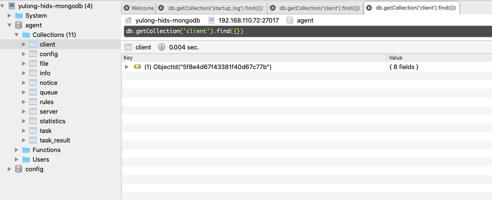
client
保存agent所在主机信息，client相对于server而言：
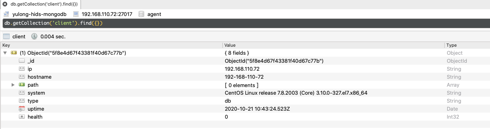
config
保存控制台设置中的所有配置信息：
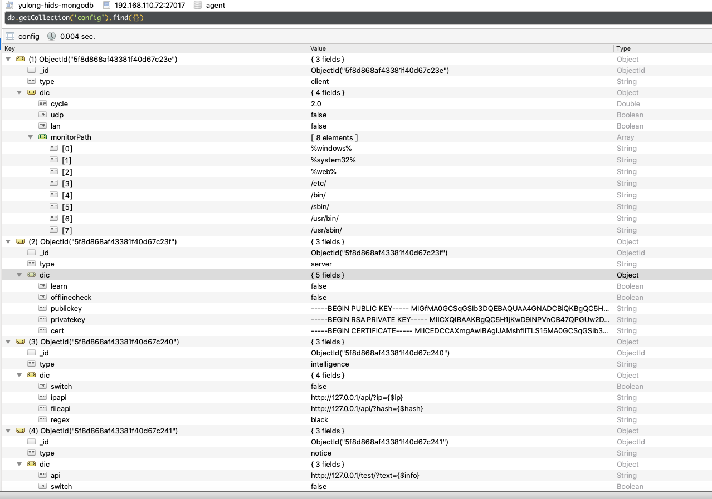
file
创建服务时上传的build好的文件（agent、daemon、data.zip）:
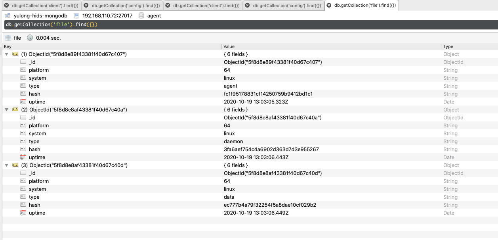
info
存储agent定时收集的主机信息，即agent/collect中子模块中收集的部分数据（userlist、listening、processlist），在主机列表/信息/界面下可以看到渲染后的数据：
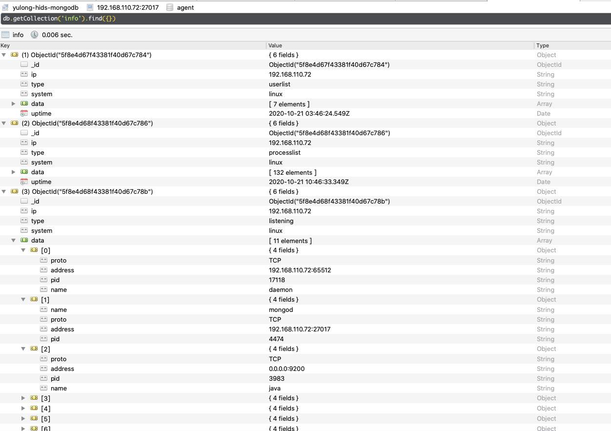
notice
notice存放规则匹配的告警事件，status标识处理状态，0表示未处理，1表示已处理，2表示忽略：
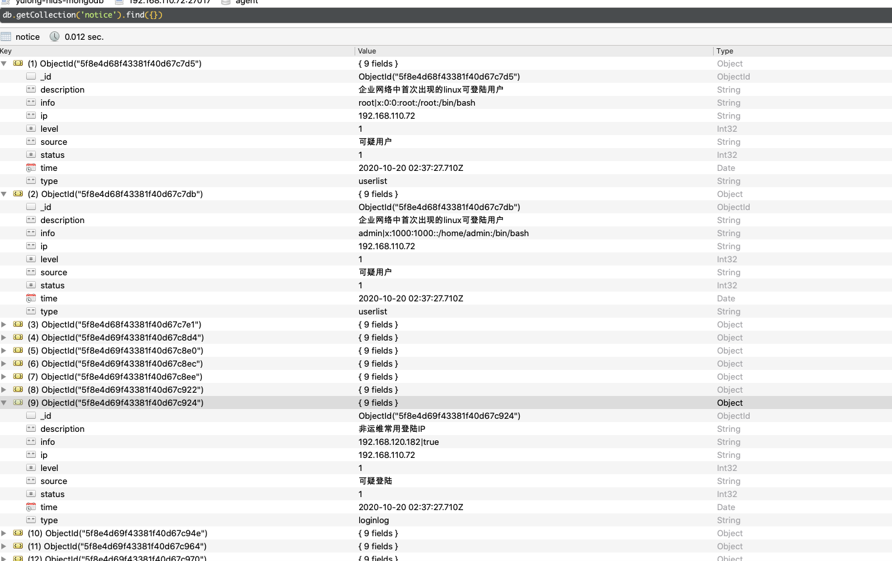
queue
猜测是server创建任务时当作任务队列用的，可能取的速度很快，所以每次看queue里面都没有数据
rules
存放server端存储的规则：
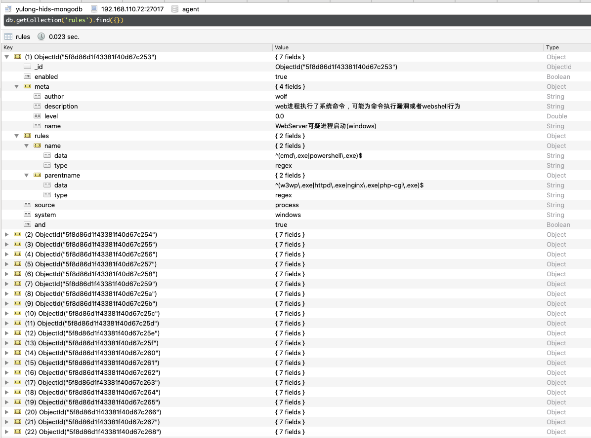
server
服务启动信息：
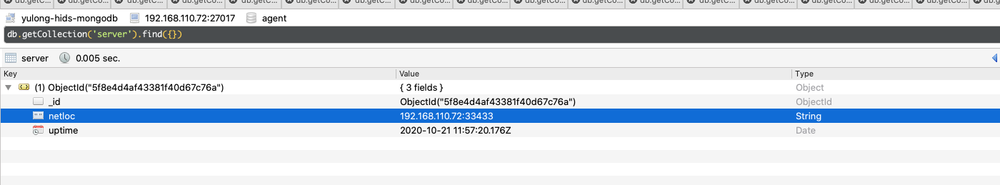
statistics
存放事件统计后的结果表
task
server创建和下发的任务具体数据和字段：
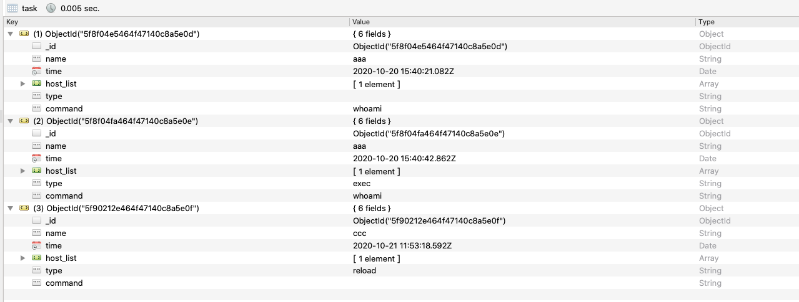
task_result
存放任务执行后的结果，在任务/查看结果/界面可以看到具体被渲染后的任务结果数据：
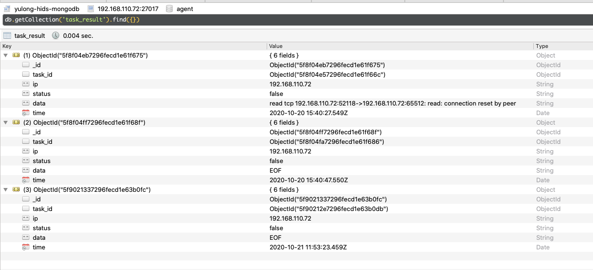
es es中的事件类型能看到的有file、process、loginlog，应该还能有connection事件的，但是这边没有看到emmmm
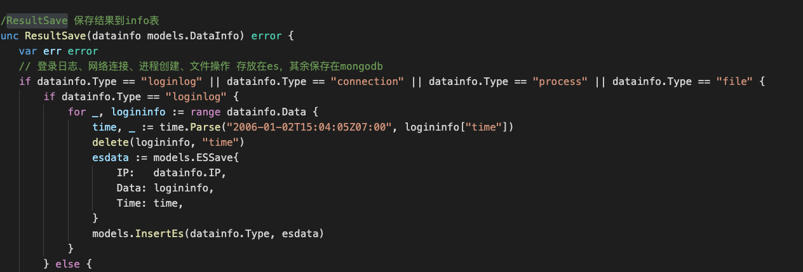
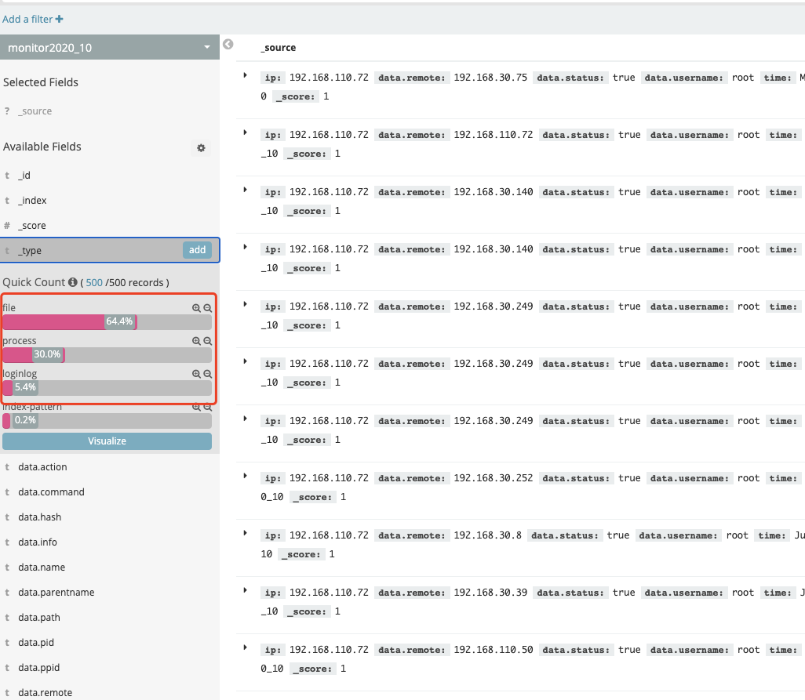
文件操作事件字段：
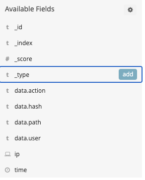
进程操作事件字段：
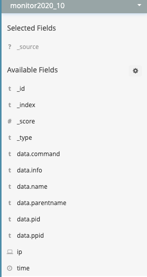
登陆日志事件字段：
Web to be continued
五、问题 yulong作为国内第一个开源hids项目虽然给人带来不少惊喜，但是不可否认还是存在很多问题的，后续不再维护确实很可惜；通过对源码的分析总结出来如下一些问题：
1、技术选型
spoock师傅说过，不谈场景，说合适不合适那都是耍流氓，hook execve的lkm在甲方安全建设的场景中确实无可厚非，甲方对内部资产的熟悉掌握和控制本来就是其优势所在，这点不能说啥；问题主要在于用libpcap的流量回调方式去捕获事件实在是非常粗糙，首先有非常大的可能存在数据丢失（遍历/proc花费大量时间，丢失pid），其次拿流量做信号去遍历/proc，流量少还好，流量一多，负载会高到爆炸，这点有测过，cpu主要占用在遍历那一块了，而且本身libpcap没有比较可控的接口；然后文件监控这块用的是inotify，问题是这样就拿不到pid了，只能做文件完整性检测，不太好做后续分析、关联等等
2、规则
项目提供的默认规则太简单和宽泛了，甚至包含一些错误，比如：
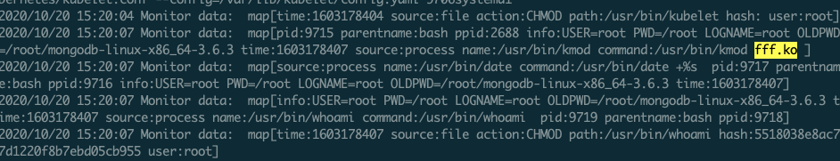
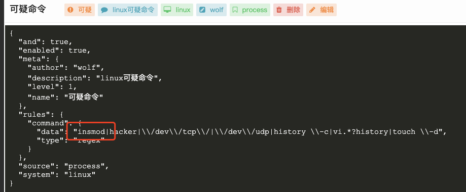
有些不太精确，比如：
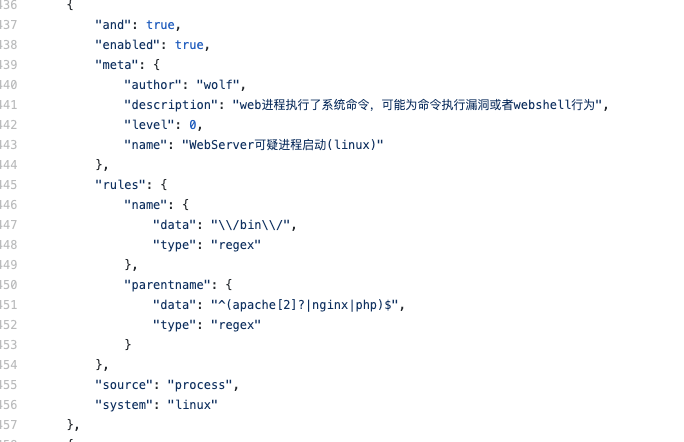
另外规则引擎的匹配算法没有做优化，规则或者事件一旦多起来，server的负载会很高
有些太宽泛导致误报非常高：
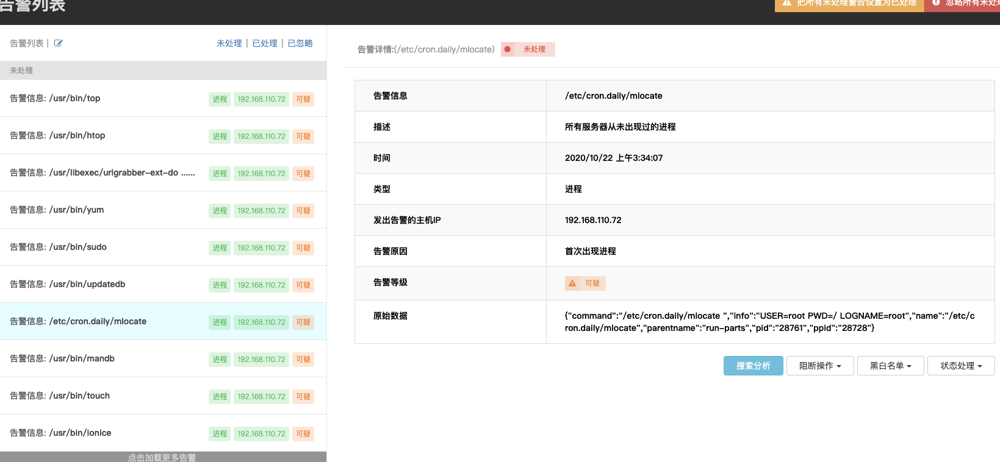
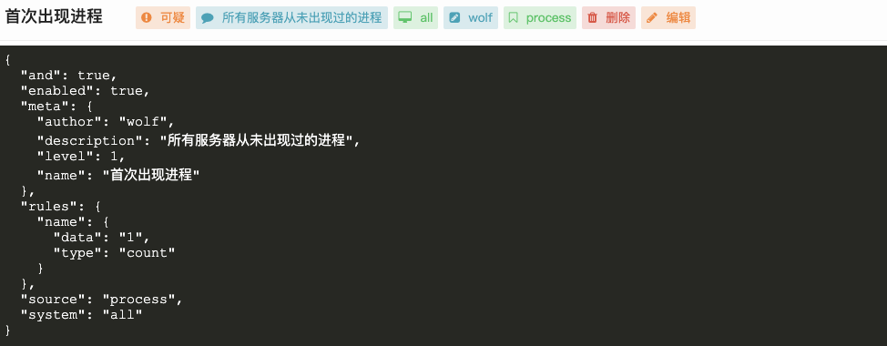
agent在测试机才装2天就有近6w条告警，这是无法运营的，当然，规则支持细粒度控制（开关）还是很不错的
3、功能
功能类型较少，功能模块划分不够细，比如没有单独的入侵检测模块，无法根据危险等级筛选告警，只能一个个去看，根据规则类型判断是否是入侵事件，没有针对性的审计告警是非常耗时的，特别是在告警数量特别庞大的情况下；
4、etc.
六、总结 针对yulong-hids的功能原理、架构设计、代码结构、源码实现进行了比较粗糙的剖析，大致熟悉了一个经典hids的内部构造；分析的过程就像是读一部从未读过的经典小说，各函数间的层层调用就像小说情节的环环相扣，而作为一个读者，就在这一个个函数、一层层调用间感受作者的真意；读完全部源码后依稀有点恋恋不舍，不禁感叹工程之美，感叹源码之美，感叹设计之美；
针对本篇中未分析的process_monitor模块，后续将在其它篇中继续进行分析